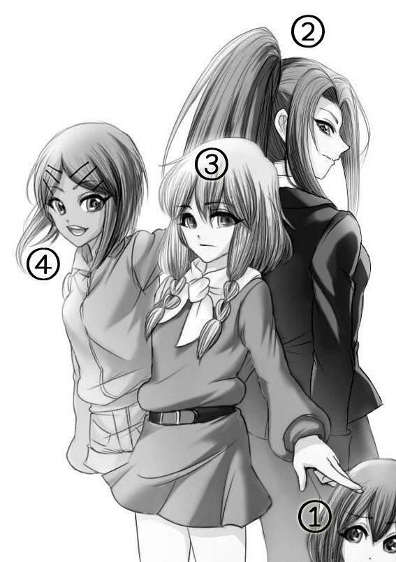

| わたしと！あなたの？声春ラジオ!?② 怪盗Ｍ●Ｘコーヒーと猫の歌 | |
| 十千しゃなお | |
| (2014) | |

① 木 下 静 アニメが好きな女子大生。人気声優である己 己 己 己 己 己 己 を姉御と崇める大ファンであり、声春ラジオのヘビーリスナー。影は薄いがモノローグ担当の歴とした主人公。
② 己 己 己 己 己 己 己 歯に衣着せない物言いと確かな実力、モデル顔負けのスラッとした美貌で人気を博すトップ声優。サバサバした性格でファンには姉御と呼ばれている。声春ラジオで共にパーソナリティを務める咏ノ原清恵とは何かと噛み合わないことが多いが、公私ともに仲がいい。長いポニーテールが特徴の独身。
③ 咏 ノ 原 清 恵 一世を風靡する超大型新人声優。己己己とは別の意味で歯に衣着せない物言いが特徴的な現役女子高生。色んな意味でピュア過ぎる発言は毒舌に捉えられてしまうことも多く、空気を凍り付かせてしまうこともしばしば。いつも淡々としているクールなおさげ美少女。
④ ？
四月の終わり。まだ地面に残っていたしぶとい桜の花びらを避けながら歩く。
あたし、己 己 己 己 己 己 己 は街灯に照らされながら一人自宅へと歩いていた。いつもより足取りが軽いのは、きっと機嫌がいいからだ。別にゴールデンウィークだから浮かれているわけではない。
今日はあたしの誕生日。歳がまた一つ増えてしまったので、それ自体は嬉しくない。むしろ若干凹む。最近は母親が「己己己はいい人いないの？」と五月蠅いから。いたら既に結婚している......はず。いや、やっぱり無理か。
ともかく。歳を取ることが好ましくないとはいえ、誰かに祝ってもらうのは嬉しい。今日は早めに収録が終わると、サプライズでケーキがプレゼントされ、そのまま飲み会へと発展した。少し飲み過ぎたのか、酔っ払っている自覚はある。影の薄い主人公からモノローグを奪ってしまうくらいには酔っている......って、何言っているんだあたしは？
「......もう十時か」
時間を確認する為にスマホの画面を見て、小さなため息を漏らす。夕方四時くらいから飲み始めたから、五時間以上ドンチャン騒ぎをしていたことになるのか。
「時間ヤバいかもな」
別にそこまで遅い時間ではなかった。大体、あたし明日午前中オフだ。問題はあたしではなく、あたしの家に来ているだろう未成年。
一年前から一緒にラジオをやっている咏 ノ 原 清 恵 。
何を考えているのかわからなくて、空気を読もうともしない素直過ぎる高校生。
冷静に考えれば面倒なやつだと思うが、不思議とつるむようになっていた。どうしてそうなったのかは覚えていない。ただ、一つ確かなのは、週に何度か清恵が家に来るようになったということだ。親子ほど歳が離れているというのに。実際、あいつのお母さんと同じ年齢だし。
確か今日は清恵が家に来ることになっていた。約束をしているわけではないが、毎週この曜日はあたしより早く家に来て、勝手に家の中で待っているのだ。合い鍵を使って。
今日はあたしの誕生日。まず来ていると考えて間違いないだろう。料理上手の清恵のことだからご馳走を用意しているに違いない。
「......今日は泊まりかな」
エレベーターに乗りながらポツリと漏らす。清恵と一緒にいると、どこか達観しているので忘れてしまいそうになるが、あいつは未成年だ。これから一人で帰らせるなんて危なくて出来ない。車で送ろうにも今日のあたしはアルコールまみれだし。
まぁ、いいか。明日、午前中オフだし。あいつも明日は土曜日だから学校ないだろうし。仕事はわからないけど。
アルコールによりお花畑な頭で適当に考えながら、自宅のドアに手を伸ばす。
「ただいまー......って、あれ？」
玄関に足を踏み入れた瞬間に違和感があった。
靴がない。
あたしのではなく、清恵の靴が。
あいつが置きっ放しにしている靴はあるが、今日履いてきた分の靴がないのだ。
いくら清恵が変わりものだからといって、裸足で来るはずがない。何だかんだであいつは常識人だ。融通は利かないが。
帰ったのかな......とも思ったが、油断するのはまだ早い。あたしはついこの間のエイプリルフールで清恵に騙されたばかりだ。あいつがあれに味をしめて、あたしを驚かせようと靴を隠して待機している可能性も０ではない。
あくまでも自然を装いながら、全神経を集中させて廊下を歩く。どのタイミングでどこから清恵が出てきても、平然とした態度で「ああ、知ってたよ」と返す為に。
「清恵ー？」
まず、リビングに足を踏み入れる。......ここにはいないか。
次に寝室を探す。ベッドやクローゼットの中も入念に探すが、清恵の姿は見当たらない。
次は和室。ここはそもそも物が少ないから、ふすまを開けて入った時点で誰もいないことがわかる。
その他にもお風呂場やベランダを覗いたり、帰宅してから五分ほど清恵の姿を探したが、結局清恵の姿は何処にも見つからなかった。
「あれ......？ 今日、来る日だよな」
流石に曜日を間違えるほどアルコール漬けになってはいない。
思わず首を傾げる。
すると、食卓の上に書き置きの手紙を見つけた。パソコンで打ったんじゃないかってくらい無機質で可愛げのない字。それは紛れもなく清恵の字だった。
「えーと、何々......明日のイベントの為に前日入りしなくてはならないので、今日は料理だけ作って帰らせていただきます。タッパーに小分けしたものを冷蔵庫に入れておいたので、温めてお召し上がりください。ちゃんと茸も食べてくださいね？......か」
そういえば、あいつ北海道の方に呼ばれたって言ってたっけ？ いつあるか聞くの忘れてたけど。
この手紙によって清恵の不在が確定したわけだけど、少しだけ面白くない。
別にあいつが帰ってしまったことに不満があるわけじゃない。あたしだっていい歳だから、スケジュールに穴を空けるわけにはいかないってこともわかってる。そんなことしたら、どんな売れっ子だろうと例外なく干されてしまう。声優業界は信用が第一だ。
不満なのは清恵の不在ではなく、あいつが残していった書き置きの文面だ。
おめでとうの言葉がないどころか、あたしの誕生日に一文字も触れていない。
もしかしたら急いでいたのかもしれないけど......それはそれで、何でも涼しい顔して済ますあいつらしくないっていうか。
何を作っていったのか冷蔵庫を開けて確認してみるが、透明のタッパーに入っているのは、八宝菜やカレー、エリンギの炒め物等......全然誕生日らしくない料理ばかり。
お菓子作りが得意な清恵なら、ケーキの一つでも焼いていても不思議じゃないのに、冷蔵庫に甘いものは何もなかった。
あれ？ ......ひょっとしてあいつ、あたしの誕生日だってわかってない？
まさかの可能性にドッと疲れを感じる。
誕生日の夜に部屋で一人きり。こんなことなら朝までみんなと飲んでくればよかったなぁ。
お酒を飲んでいるからか。それとも三十歳を超え、女として若くなくなったからか。あたしは少しだけ寂しいと思ってしまった。
今から後輩を呼び出して飲みに行くのもなぁ。......仕方ないからテレビでも見ようかね。
冷蔵庫から発泡酒のロング缶を二本取りだし、ソファーに腰掛ける。リモコンで液晶テレビの電源を入れると固っ苦しいニュース番組が画面に映った。
ニュースって気分じゃあない。
何か面白い番組でもやってないかとチャンネルを次々変えるも、あるチャンネルはホラー系の映画だったり、あるチャンネルは救命病棟のドキュメンタリーだったり、あるチャンネルは大人の恋愛ものドラマだったり......あたしの見たい種類の番組はどこにも流れていなかった。
あーもう、違うんだよなー。もっとドンチャン騒ぎしてるアホみたいな番組やってないのかよ。
もしかしたらあたしは拗ねているのかもしれない。
三十過ぎのいい大人が。
十代の女の子のせいで。
......こうなったらふて寝でもしてやる。
テレビをつけたまま、ソファーに仰向けに寝転ぶ。すると。何かが後頭部に当たった。
「ん？」
上体を反らして、見上げるように自分の頭に当たったものを確認すると、いつも清恵が座っている、ソファーの端の方に長方形の小さな箱を見つけた。鮮やかな包装紙と赤いリボンで綺麗にラッピングされたその箱は、いかにもプレゼントという見た目をしている。
「なんだこれ？」
起き上がり、その箱を膝の上に置く。リボンと箱の間に何やらカードが挟まっていたので、抜き取って裏返すと、そこには[HappyBirthday]の文字が印刷されていた。
今日の飲み会で誕生日プレゼントをいくつかもらったけど、まだ鞄の中から出していない。それにあたしはこんなところに何かを置いた覚えはない。
ということは......泥棒でもない限り、この家に入れるのは清恵しかいない。
「......なんだよあいつ。ちゃんと誕生日だってわかってんじゃん」
ぶつぶつと文句をこぼしながら、顔が勝手にニヤけてしまうのを抑えつつ、あたしは丁寧にリボンを解いた。
大音量の着信音で目を覚ます。
まだ寝ぼけているけど、見覚えのあるポスターや飾ってあるフィギュアから、ここが私の部屋であることは間違いない。そして、このアホみたいに大きな音を出しながら震えているスマホも私、木 下 静 の所有物で間違いない。
ああ、私、うたた寝してたんだ。パソコンの前で。
現状を認識していると、着信画面にはデカデカと店長の名前。店長から電話があるときは十中八九、バイトに臨時で出られないかという相談の電話だ。
面倒くさいなぁ。電話に出ると長いんだよねぇ、断っても。居留守？を決め込むことにしよう。
......あ。そういえば。
今何時なのだろうと画面の上の方を確認する。そして、一瞬心臓が止まった。
時刻は二十二時五十八分。
そして、私の記憶が正しければ。今日は『声春ラジオ』がある日だ。
危なっ!? もう少しで寝過ごすところ！ ......そうだ、確か私、ラジオが始まるのを待ってたんだった。
......ありがとう店長。
心の中で感謝を述べる。私は電源を切ってからスマホをベッドの上に放り投げ、ヘッドホンを頭に装着するのだった。
『えー、本日も始まったんだけどね、今日はまだあたし一人』
あれ？ 姉御一人？ そういえばこの間もそんなことがあったような......。
『まぁまぁ、エイプリルフールでもね、あたし一人で始まったんだけども、今日はね、今日はそういうんじゃなくて、逆にあたしがあいつをサプライズに嵌めてやろうと。前回あたしを嵌めやがったアホの作家と結託してね、実は収録の開始を二時間前倒ししてます。清恵には内緒で』
意外と根に持つなぁ、姉御。
結婚して声優を辞めるという、咏ノ原さんのドッキリに引っかかったときの姉御は凄かった。普段のサバサバした男らしい態度からは想像出来ないほど、駄々っ子のように咏ノ原さんを引き留め。私たちファンは、あのエイプリルフール回を神回と呼んでいる。
『いつも清恵はかなり早くスタジオに来るんだけどね、色々メールとか読んだりするから。そんなね、今日のラジオで何話そっかなーみたいなことを考えながらスタジオに行ったにもかかわらず、既に収録が始まってたとしたら、あいつはどんな反応をするのかっていうドッキリ』
うわぁ......地味だけど凄いイヤなドッキリだ。私だったら時計も見ずに取りあえず必死に謝る。自分が悪いかはともかくとして。
『まぁ、そのくだらないドッキリとは別に、本当にサプライズな発表もあるんだけど......それはまぁ、おいおいってことで』
そんなわけで姉御の一人ラジオが始まったのだけど、今日の姉御はどこか機嫌がよかった。咏ノ原さんに仕返しするのがそんなに楽しいのかな？
メール主体の一人しゃべりが十五分ほど続くと、空気が外に逃げていく音がして、その後、何かを閉めたような音が聞こえた。
『......どうしてもう収録が始まってるんです？』
疑問を投げかける淡々とした声。それは間違いなく、もう一人のパーソナリティ・咏ノ原清恵さんの声だった。
咏ノ原さん来るの早いなぁ......いつもこれくらい前にブースの方に来てるんだ。
さて、姉御はどうするのだろう。
『......どうしてじゃねーよ！ 今日はいつもより早く収録するって言っただろうが。重大発表があるからって』
『言ってましたか？ 私は聞いた覚えがないです』
『言ってたわ！ マネージャーから電話もきてるから』
『本当です？ 青木さん、電話しました？』
『したよなー！ 青木？ したよな？ な！ な！ したよな、青木？ あ、ほら、頷いた。青木、電話したってさ』
どうやら姉御は声の圧でブース外のマネージャーを頷かせたらしい。伊達にキャリアは長くない。
『電話があった覚えはないですが......わかりました。以後気をつけます』
咏ノ原さんの声はいつも通り淡々としていたが、どこか釈然としていない感じが混じっていた。そりゃあそうだろう。本当は咏ノ原さんが正しいんだから。
『次からは気をつけろよ？』
『......はい』
『まったく、これだから女子高生は......って、あれ？ あんた手に何提げてんの？ その紙袋』
『これです？』
ガサゴソとノイズが入る。
『己己己さんに渡そうと持ってきたんです』
『あたしに？』
『先にお渡ししようと思い、お家の方を伺ってから来たのですが......』
『え？ そうだったの？』
『はい。イベントで行っていた北海道のお土産です』
『あ、ほんと。悪いねー』
『いえ。先日のお誕生日に何もして差し上げられなかったので。それに、直接おめでとうって言って差し上げたかったので。お誕生日おめでとうございます』
なるほど。今日の姉御はどこか嬉しそうだと思ったけど、そういうことか。姉御の誕生日は先週の金曜日。今はもう一週間経ってしまっているが、声春ラジオの収録は月曜日。つまり誕生日からまだ三日しか経っていない。
『あいあい。ありがとさん。何かもらってばっかだなぁ......わかった！ さては清恵、お返しを期待してるな？』
『もらってばかり......？ 一体何の話です？』
『いいって、いいって。しらばっくれなくても。誕生日いつだっけ、あんた』
『......十月五日です』
『十月の五日か......えーと、十 月 十 日 だから......クリスマスベイビーってことか』
『ＷＨＯの基準に照らし合わせると受精から二百六十六日前後と言われていますけどね』
『へー、そいつは知らなんだ。ん？ そういえば清恵が生まれたのってあんたのお母さんが十五のときだっけ？』
『はい』
『つーことは......やれやれ、性の乱れってやつ？ 世も末だね、ほんと』
『まったくですね。三十一で未婚の方もいるというのに』
『......う、うるさいな！ さっさとタイトルコールいくぞ！』
声の大きさで話をうやむやにすると、姉御は矢継ぎ早に番組のタイトルを言い始め、それに咏ノ原さんが合わせる。
『わたしと！』
『あなたの？』
『『声春ラジオ!? 』』
いつも通り二人のタイトルコール。番組開始から一年以上経つが、二人の噛み合っているようで噛み合わないトークは今も変わらない。
......というか姉御、いつになったらドッキリだってネタばらしするんだろう。これじゃ、ドッキリになっていないような......。
『何のイベントで北海道に行ったんだっけ？』
『アニメです。魔法探偵ワッフル☆スコーンのイベントで』
『へー。何で北海道？ こういうのって東京か大阪でやんない？ 普通。あと名古屋とか』
『今回のイベントで発表されたのですが、映画になるんです。ワッフル☆スコーン。北海道を舞台に』
『あー、そういうやつね。なるほど。あんたは出るの？ 何だっけ、グ、グ、グリ』
『グレイスです。音 盗 りのグレイス』
『そーそー、あのボインの女狐』
『随分とオヤジっぽい発言ですね』
『ビジュアル的に大違いだよな、清恵とは』
『多分バストは二十センチくらい違うのでは？ 映画にはグレイスも出ますよ。というよりもグレイスが主役みたいなものなので』
『もうシナリオ出来てんだ？』
『はい。嘘と記憶を盗まれた女狐怪盗グレイスが全てを取り戻す物語、というテーマだそうです』
『まぁ、人気あったしねぇ。あんたのキャラ』
しみじみと声を漏らす姉御の言う通り、咏ノ原さんのデビュー作[魔法探偵ワッフル☆スコーン]は当たりアニメであり、音盗りのグレイスは当たりキャラだった。
グラマラスで露出の多いビジュアルもさることながら、嘘を吐くことが出来ない怪盗というギミック。実はスコーンの姉という美味しいポジション。正直な話、シリーズの後半、もう一人の探偵ワッフルはほとんど蚊帳の外だったと言っても過言ではない。
私もグレイスは好きだ。嘘を吐くことが出来ないというハンデを負いながら、自分が所属する犯罪組織・梁 山 泊 の撲滅を画策する珠玉の知恵比べを見たら、グレイスが好きになるに決まっている。
『あ、そっか。そういえばグレイスは梁山泊のリーダーに嘘を盗まれたままなんだっけ？』
『そうですね。それとスコーンが妹だということは思い出しましたが、まだ記憶の大部分は盗まれたままです。今回はグレイスが嘘と記憶を盗まれた過去の話、そして嘘と記憶を取り返す現在の話になるそうです』
『......ふーん。なるほどねぇ』
『どうしましたか？ 何か腑に落ちていないような顔をしていらっしゃいますが』
『いや、最近こういうの多いなって思って』
『と、言いますと？』
『何つーの？ 続きは劇場で！とか、続きはＯＶＡとか』
『そう......かもしれませんね。確かに一昔前よりアニメの映画化が多くなったような気がします』
『あたしもさ、映画になったりＯＶＡになったりすること自体はいいと思うのよ。けどさ、最初っから劇場版やＯＶＡを意識した作りになってるのはよくないと思うんだよね』
『別に私は構いません。仕事は増えますが、その分ギャラも発生するので』
『ほんとに一貫してドライだね、清恵は。あたしも声優としては文句ないよ。あんたの言う通りお仕事だしね。ただ、一人のアニメファンとして言わせてもらうならさ、やっぱりテレビ放送内で完結してほしいよね』
『ファンの方も嬉しいんじゃないです？ テレビ放送が終わったあとも好きなアニメの続きを見られるんですから』
『んー......そうかもしんないけどさ、それなら完全オリジナルのシナリオにすればいいじゃん。テレビ放送の謎を残したままにしないで』
『アニメだけじゃなくて、最近はテレビドラマでもよくありますよね。劇場版で完結というパターン』
確かにそういうパターンは多いかもしれない。でも、テレビ放送の総集編を劇場でやるのよりはいいかな、と個人的には思ったり。
『......そうですね。確かに己己己さんの言う通りかもしれません』
『だろ？』
『ええ。ですが、優秀なビジネスになりえるのでは？ 風呂敷をたたまないままテレビシリーズを終えたにも関わらず、世紀をまたいだ今でも劇場版をやっている人気ロボットアニメとかありますし』
『あんた、結構攻めるね......』
『ああいうのは、あえて風呂敷をたたまないのかもしれませんね。そうすることで熱心なファンが勝手に考察して盛り上がって下さいますから。途切れることのない素晴らしいコンテンツだと思います』
『ペーペーが作品批判とかちょっと恐いんだけど......？ 頼むから作品名出さないでね？ 炎上するから』
『批判はしていないと思いますが？ むしろ褒めているつもりなのですが』
『いや......あんたの場合、何言っても棘があるように聞こえるんだよ』
『つまり私は綺麗な薔薇ということですね。ありがとうございます』
『褒めてねぇよ。そういうこと無表情で言っちゃえるあたりも恐過ぎだから......』
相変わらず咏ノ原さんはどんなことにも動じない。冗談めかして言うのならともかく、いつもと同じ淡々とした口調で、自分のことを綺麗な薔薇と言ってしまえるだなんて。普通の人だったら言ってる途中で恥ずかしくなっちゃいそうだけど、咏ノ原さんの綺麗な肌はきっと雪のように白いままなのだろう。
『ところで、北海道はどうだった？』
『どうしようもないくらい田舎でした』
『え？ 札幌とかでやったんじゃないの？』
『いえ、安 平 町 です』
『どこそこ!? 』
『北海道ですよ？』
『いや、そうじゃなくて！ 何、何市？』
『何市......？ 勇 払 郡 です』
『勇払郡？ 聞いたことないな......何か有名なものあんの？ 名産品とか名所とか』
『名産品は馬ですね』
『馬？ 馬刺しってこと？』
『そういう意味ではないです。ちなみに馬刺しは熊本の郷土料理だそうですよ』
『あれ？ あたしは山梨の郷土料理だって聞いたような気がするけど』
『他にも青森県や山形県、福島県など、古くから馬の生産を行っていた地域には馬肉を生で食べる風習があるそうです』
『ほー......あんた、よく知ってんね、そういうこと。馬に興味でもあんの？』
『いえ、まったく』
『だろうと思った......それで？ そういう意味じゃないってどういうこと？』
『食用の馬ではないということですね。安平町には競走馬の生産で日本一有名な牧場があるんです』
『日本一？ へー、そいつはすごいけど......田舎なんだろ？ その安平町って』
『はい。ド田舎です』
『そんなド田舎を舞台にしてどうすんの？ 何も盗むもんなくないか。馬ぐらいしか』
『だから馬を盗むんです』
『たかが馬～？ そんな価値あんの？ 新車くらいじゃないの？ 値段的に』
『日本ですと、近代競馬の結晶と呼ばれた馬に五十一億円のシンジケートが結ばれているそうです』
『五十一億!? あたしの年収の何十倍だよ......？』
『たかが馬以下の存在価値ですね、己己己さんは。犬畜生以下です』
『......言っとくけどあんたもだからな？』
『どうしてわかるんですか？ まさか私の明細覗いてるんです？』
『それくらい予想出来るっての。売れてるつってもまだ二年目だしね。あたしとはギャラのベースが違う』
『ですが、歌の方でそれなりにもらってますよ？』
『それはあたしも一緒だってば』
『でも、己己己さんは作詞作曲してないですよね？』
『まぁね。あたしはそういうセンスないって自分でわかってるからさ......って、まさかあんた、作詞作曲自分でやってんの!? 』
今日一番の驚愕の声に、
『はい。何曲かは』
咏ノ原さんは平然と答えてみせた。
全部自分でやってるんだ......今年高校二年生になったばかりなのに。
『あんたは本当に多才だね......というか、よくやらしてもらえるな。新人のくせに』
『うちの社長にお願いしたら、二つ返事でしたよ？』
『あんたに甘過ぎだろ社長』
『金の卵を産む鶏ですからね』
『もう自分で言うなってツッコむのも面倒くせぇな......んで？ 何の話してたんだっけ？』
『北海道はどうだったのかという話です』
「ん？ もう一回言ってみ？」
『......？ 北海道はどうだったのかという話です』
『おいおい、駄洒落か？ 北海[道]は[どう]って』
『自分で仰った言葉じゃないですか。変なキャラ付けをしようとなさるのならぶっ殺しますよ？』
『酷い物言い......あんたねぇ、一応先輩だぞ？ あたし』
『......そうですねわかりました。ぶっ殺すのはやめて、物故にします』
『あれ？ 大して変わってなくね？』
噛み合っているようで噛み合っていない二人のトークは一年経っても相変わらずだけど、芸歴が何十年も長い姉御に物怖じしない咏ノ原さんの態度も相変わらずだ。一年も業界にいれば少しは丸くなるのではないかと思ったが、咏ノ原さんは何も変わらない。
『北海道はよかったですよ。まだ桜も残っていましたしね』
『もう五月の頭も見えてるってのに？ 流石は北国だね』
『ご飯も美味しくて、空気も綺麗でした。次はプライベートで行ってみたいです』
『お、珍しいね。毒舌家の清恵がそんなに褒めるだなんて』
『？ 私は毒舌家なんです？』
『いや、あんたは素直ないい子だよ......』
皮肉っぽく己己己さんが吐き捨てると、
『皆さんによく言われます』
咏ノ原さんは当然の褒め言葉として受け取る。本当にこの人は危ういくらいに純粋だ。
『いつか刺されそうだな、ほんと......。面白い土産話はないの？ 何か事件があったとかさ、そういうの。あったとしてもどうせ大した事件ではないと思うけど、そこら辺膨らませて話してみ？』
『事件ですか？ そうですね......あ、窃盗の被害にあったかもしれません。北海道ではなく、こちらでの話ですけど』
『窃盗!? ほんとの事件じゃん！』
『まだ窃盗と決まったわけではないですが。私が自分で失くしてしまった可能性もありますし』
『あ、ひったくりとかじゃないんだ......びっくりした』
ホッとしたように姉御は声を漏らす。絶対に否定するだろうけど、姉御は咏ノ原さんのことを大事にしていた。私たち姉御のファンは、二人のことを事務所の先輩後輩という関係ではなく、姉と妹、あるいは母と娘のような微笑ましい関係だと認識しているのだ。
『じゃ、置き引きってこと？』
『......そうなのかもしれません』
『何やられた？ 財布？』
『財布......みたいなものです。まぁ、中には何も入っていなかったのですが』
『へー......警察には言ったの？』
『いえ。自分でなくしてしまったのかもしれませんし、大した被害でもないので』
『そっか。確かに、現金とかカードとかを盗られたわけじゃないし、わざわざ警察に行く方が面倒か』
『......それは......そうですね』
『ん？ 何かあるの？』
『いえ......そういうわけでは......』
『何その、奥歯に何か引っかかってるみたいな物言いは』
『奥歯ですか？ ここに来る前に歯は磨いてきたはずなのですが』
『そういう意味じゃなくて。何か考えごとしてるでしょ？ らしくないよ』
『そう言われてしまうと、まるで私がいつも何も考えていないみたいで心外ですが......気になることがありまして』
『気になること？』
『はい』
『取りあえず言ってみたら？ 駄目そうな内容だったら編集すればいいし』
『......わかりました』
いったい何のことだろう。私まで息をのむ。
『大したことではないのですが......』
『大したことじゃないけど？』
『己己己さんが冒頭に仰っていた重大発表はいつになったらするのかなって』
『あ』
そういえばそうだった。ドッキリのネタばらしもしてないし。
『発表は二つある。どっちが先に聞きたい？』
『洋画でありがちな、いいニュースと悪いニュースってやつです？ 吹き替えでもやってきたんですか？』
そう言われてみると、よくある言い回しかもしれない。
『二つともいいニュースかな？ あたし的には悪い話じゃない』
『そうですか。では、どちらが先でも構いません。どうせ二つとも聞くことには変わりないので』
『可愛くないやつだなぁ......』
『そうですか？ 一般紙に巻頭グラビアが載るくらいですので、それなりだとは思うのですが』
『いや、そういう意味じゃないから......』
『はい......？』
姉御の言いたいことがわからないのか、不思議そうな咏ノ原さん。
この人は臆面もなく自分の評価を言っちゃうけど、何故だかナルシズムを感じない。どこか客観的というか。自慢するニュアンスや喜んでいる感じが一切なくて、ただ淡々と事実を告げているって感じで。もしかしたらそれが、ナルシストではなく、空気が読めない人と評される原因なのかもしれない。
『一つ目。番組に新しいスポンサーがついた』
『それは初耳ですね。なんていう会社ですか？』
『大 和 田 学院ってとこ。ほら、専門学校の』
『ああ、結構な大手じゃないですか。相当手広くやっているみたいです』
その名前は私も聞いたことがある。パンフレットをもらったこともあるし。確か、ゆりかご作りから墓場作りまであるくらい学科が盛り沢山なのがウリだったような。
『まぁ、スポンサーが増えても私たちのギャラは変わらないと思いますけどね』
『ばーか。制作費が増えればロケと称して好きなところに遊びに行けるんだな、これが』
『ラジオを何本も抱えている己己己さんのマイレージが、やたらと貯まっているのはそういうことだったんですね。勉強になります』
『そういうのオフレコで言ってくんないかな......事務所に怒られるから』
とか言いつつ、編集でカットしない辺りこの番組は流石だ。咏ノ原さんが住所をぶっ放しそうになってもほぼ編集なかったし......いったいこのラジオのＮＧはどこにあるのだろう。
『んで。二つ目。新しい子が入る』
『新しい......？』
『そ。早速今日からね』
『つまり......クビということですね』
『いや、そういうわけじゃなくてさ』
『己己己さん......今までご苦労様でした』
『何であたしがクビになる感じなんだよ!? 』
凄まじいレスポンスでツッコミを入れる姉御。本当に咏ノ原さんの発言は恐ろしい。悪意がなさそうなところがさらに恐ろしい......。
『新しい子つっても裏方で、それも、ずっとやるわけじゃないけどな』
『そうなんです？』
『三ヶ月とか四ヶ月でどんどん別の子に変わるみたい』
『......ひょっとしてインターンみたいなものですか？』
『ご名答。ま、ぶっちゃけるとスポンサー枠みたいなもんさ』
『そうですか。私は別にスポンサー枠だろうと何であろうと構いません。不具合が起きなければ、という条件付きですが』
『手厳しいねぇ。そんなこと言われたら今日から一緒にやる子も萎縮しちゃうよ？ あんたより年は上だけど、業界ではあんたの方が一年先輩なんだから、可愛がってやんな』
『先輩後輩......よくわかりませんね。部活に入っていたことがないので』
『中学のときも？』
『はい』
あー、そうかも。咏ノ原さんて部活とか似合わない。
『私と己己己さんみたいな関係と捉えてよろしいのでしょうか？』
『え？ あたしと清恵みたいな......？』
『はい』
『......こんな捻くれた後輩がもう一人ってこと？』
『先ほどは素直だって言ってませんでした？』
『......やだなぁ。こんなの二人は......やだなぁ』
『私はどうでもいいですけどね』
流石の姉御も、斜めに真っ直ぐ過ぎる人間を相手にするのは一人が限度なのかな。リスナーとしても遠慮願いたいけど。
そういう意味でも、咏ノ原さんはオンリーワンの立ち位置を築いていた。
『んじゃ、入ってきて』
姉御が呼びかけると、ブースのドアが開く小さな音が聞こえ、次に、
『押忍、失礼するっス！ 今日からお世話になっている尾 上 紀 衣 っス！ 己 己 己 己 先輩、咏ノ原先輩、よろしくっス！』
元気で大き過ぎる声が耳に飛び込んできた。うわ、元気いいなぁこの人。
『......なるほど。このうっとうしい話し方といい、目に入らないようにデコを出してる髪型といい、体育会系か』
『......己 己 己 さん、っス？ってどういう意味何でっス？』
『清恵、清恵。感 染 ってるし、使い方も間違ってるぞ......[っス]って言うのは、体育会系の連中の敬語みたいなもんさ。[です]の省略形だな。さっきの場合なら、どういう意味っス？が正しいかな』
『そうですか。私にはよくわからない文化ですねっス......ややこしいです』
『やめときな、あんたにゃ向いてないから』
どうやら咏ノ原さんにも苦手なことはあるようで安心する。まぁ、体育会系の咏ノ原さんて想像出来ないけど。肌真っ白だし。
『えーと、尾上紀衣さんだっけ？ 歳はいくつ？』
『二十一っス！』
『部活か何かやってたの？ 武道系？』
『今はバイトが忙しくて何もやってないっスけど、ずっと空手をやってたっス！』
『へー、空手か。何でそんなバイト頑張ってんの？』
『自分のところ片親なんスけど、この間お母さん倒れちゃって......なんで、今は自分が実家に仕送りしてるんスよ！』
『なるほど、苦学生ってやつね』
『はい！ お母さんはいつも自分のワガママを聞いてくれたんで、今度は自分が恩返ししたいっス！』
へー、偉いなぁ。登場の仕方がちょっと派手だったけど、どうやら尾上さんはまともな人のようだ。ちなみに将来は音楽関係の仕事に就きたいのだとか。
『あ、そうだ。あたしたちに何て呼ばれたい？ 名前？ それとも苗字？』
『そうっスねー......生意気なこと言っていいっス？』
『生意気なこと？ 取りあえず言うだけ言ってみ』
『己己己己先輩と咏ノ原先輩にあだ名をつけてもらいたいっス！......なんて』
『あだ名？ 別にいいけど、あだ名ねぇ......清恵、何かアイデアある？』
『そうですね、......デコ、なんてどうでしょうか』
『見たことをまんま言ってるだけじゃん。おデコ出してるからデコって乱暴過ぎるだろ。基本あだ名って本名をもじってつけないか？』
『そう言われましても、紀衣であだ名を作るのは難しいのでは？ どう頑張っても、名前よりあだ名の方が長くなってしまうような気がします』
『じゃ、尾上の方で考えればいいじゃん』
『......例えば己己己さんならどのようにつけますか？』
『あたし？ あたしならそうだなぁ......』
私もデコというあだ名はちょっと酷いなって思うなぁ。きっと、咏ノ原さんのセンスを酷評した姉御なら素晴らしいあだ名をつけてくれることだろう。
『うーん......パチとか？』
『パチ？ 一体どこからもじったんです？ 尾上にも紀衣にもかかっていないような気がするのですが』
『デコッパチのパチかな！』
『結局、己己己さんも身体的特徴をあげているだけじゃないですか』
『あ、あたしの方が捻りがあるから！』
......うーん。二人とも大して変わらない。でも、デコとパチはちょっと酷いような。尾上さんにちょっと同情する。せっかくまともな人っぽいのに......。
『デコにパチっスか......？ いいっスね！ めっちゃカッコ可愛いっス！』
『じゃ、決まりだな』
『ですね』
前言撤回。やっぱり尾上さんも変な人だった！
『......あれ？ そういえば今日、飲み物は？』
『ないみたいですね。収録が始まってからずっと気になってはいたのですが』
姉御と咏ノ原さんの声に尾上さんが謝る。声春ラジオは一時間番組。使わない部分もあるが最低でも一時間は喋りっぱなしなので水分補給は欠かせない。
『すみません！ 今買いに行ってくるっス！』
『あ、いや大丈夫。マネージャーの青木に行ってもらうから』
『でも......』
『大丈夫ですよ、デコさん。これも青木さんのお給料に含まれているので』
『ダメっス！ 今日が初日なんで、お願いっス！ 自分にいかせてください！』
こっちにまで必死さが伝わってくる尾上さんの声に、咏ノ原さんはやれやれとため息をついた。
『......己己己さん』
『だな。ＯＫ。んじゃ、パチ。頼む』
『了解っス！ ありがとうございます！』
心底嬉しそうな尾上さん。咏ノ原さんが折れるなんて珍しい。そんなに喉が渇いてたのかな。
『自分、何買ってくればいいっス？』
『うーん......清恵は何か好きな飲み物あるっけ？』
『そうですね......市販の飲み物だとＭ●Ｘコーヒーが好きです』
咏ノ原さんの答えに、姉御は大きく驚きの声を上げた。
『ＭＡ●コーヒー!? あの超甘いヤツでしょ？』
『そうです』
『あんた、コーヒーはブラックで飲んでなかった？』
確かにブラックコーヒーの方が咏ノ原さんのイメージには合っているような気が。女子高生のイメージには不釣り合いだけど。
『ブラックか●ＡＸコーヒーですね。●ＡＸコーヒーばかり飲んでいたら、糖尿病まっしぐらなので』
『変なところでバランスとってんな......あんな甘いののどこがいいわけ？』
『甘いところに決まってるじゃないですか。何を言っているんです？』
『かー、お子ちゃまだねぇ清恵は』
『コーヒーを飲めない己己己さんの方がお子ちゃまだと思いますが』
『あんな苦いの飲むくらいならお子ちゃまで結構』
『ですから、Ｍ●Ｘコーヒーは甘いんですってば』
『いや、そういうことではなく......』
『あ、あの！ 己己己己先輩って甘いの嫌いっス？』
二人の流れるような掛け合いに尾上さんが勇気を持って割り込む。
『いんや？ あたしは左党だけど砂糖も好きだよ』
『左党......っス？』
『己己己さん、その駄洒落は同じ三十代にも通じるか疑わしいです』
インターネットで検索したところ、左党とはお酒飲みのことらしい。反対に右党は甘党のことだそうだ。姉御はともかく、どうして女子高生の咏ノ原さんが知っているのだろうか......。もしかして姉御の持ちネタ？
『さて、飲み物もきたことだし、メール行こっか？』
『了解です。えーと......ジョンからの手紙さんからのメールです』
『ん？ 手紙なの？ メールなの？』
『メールです。【ジョンからの手紙】までがペンネームですね』
『変な名前だなぁ』
『そもそもペンネームって変なものが多いと思いますが？ 己己己さん、清恵さん、こんばんは』
『あい、こんばんは』
『唐突ですが、モテ期が来ました。それで、お二人に相談が』
『本当に唐突だな。自慢メールかよ』
やれやれとわざとらしいため息が聞こえた。こういう恋愛系のメールであからさまに毒づくのが、姉御に求められるリアクションでもある。
『......モテ期って何です？』
『あれ？ 清恵知らない？』
『言葉自体は聞いたことが......意味は知らないです。以前友人に、雨期や乾期の類いだと教わったことがありますが。どうやら違うみたいですし』
『......あんた、本当に友達いたんだ......！』
『本当じゃない友人ってどういう意味です？ 妄想の中の友人ですか？』
姉御の言い分は酷いけど共感出来る。咏ノ原さんは一人でも生きていけそうというか。でも、そんな咏ノ原さんと姉御がプライベートで遊ぶ仲だというのも面白い。もしかしたら、咏ノ原さんのある種近寄りがたいキャラは演技なのかな？ ......いやまさか。
『モテ期のモテは、モテモテのモテ』
『モテモテのモテ......？』
『そ。要するに、モテ期っつーのはモテる時期ってやつ。人生には三回モテ期があるってよく言うよ？』
『三回です？ ということは三回モテ期の終わりがあるということですよね？ 普通モテる人はいつでも継続的にモテるものだと思いますが』
『普段からモテてるやつは、もっとモテるんじゃないかな？ 知らないけど』
『何だかオカルトですね。己己己さんにもモテ期はあったんですか？』
『......何か失礼な聞き方だな。あたしにもモテ期はちゃんとあったっての』
『いつです？』
『一回目は生まれた直後。大層可愛がられたらしい』
『誰であろうと赤ん坊は可愛いですしね』
『この野郎......』
他意はないんだろうけどトゲがあるなぁ......。
『二回目は小学校のとき。その頃から身長高かったしね』
『何となく己己己さんはガキ大将だったような気がします』
『姉御肌って言ってくんな』
小学生ぐらいのときは女の子の方が強かったりするから、咏ノ原さんの言いたいことはとてもよくわかる。反対に、咏ノ原さんの小学生時代を想像してみるけど......うーん、ガキ大将じゃなかったのは確かだろう。
『清恵はもうモテ期きたの？ まぁ、あんたの場合は他人からの好意ってもんに気づかないのかもしんないけど』
告白されたことにも気づかない可能性。鈍感というか、興味がないことは全てシャットアウトしている咏ノ原さんなら大いにあり得る。告白した男の子は可哀想だけど。
『モテ期かどうかはわかりませんが、先週、同級生に告白されました』
『......え!? 』
え!?
パソコンの前で、私も姉御と同じリアクションをしてしまう。
いや、咏ノ原さんは疑いようのない美少女だし、芸能人だからモテるのは当たり前なんだけど......まさか咏ノ原さんが告白されたことに気づくなんて。失礼だけど驚かずにはいられない。
それにラジオでこういうこと言って大丈夫なのかな？ 放送されてるってことは事務所から許可出てるんだろうけど......。
『......人間？』
『当たり前です』
『......罪の告白とか？』
『私は聖職者ではありませんよ？』
確かに咏ノ原さんはシスターさんになれそうなくらいのピュアだ。でも、ピュア過ぎて「神様なんていません」て言っちゃいそうだから、シスターさんには不向きかもしれない。
『......そっか。まぁ、高校生に色恋沙汰はつきものか。それで？』
『それで......？』
『何て言われた？ あ、いや、ちょっと待て！ シチュエーションは？ 呼び出し？ 電話？ メール？』
『呼び出しですね』
『どうやって呼び出された？ ちょ、再現。再現っていうか、詳しく話してみ！』
『そんな大した話ではないと思うのですが......』
いつになく恋愛ネタにのり気な姉御。もしかしたら、これが素の反応なのかな？ それともラジオとして面白くしようとしてる？
『そうですね......朝、学校に行ったら下駄箱の中に手紙が入っていて』
『下駄箱に手紙って！ 今時の高校生って感じじゃないだるぉう！ 何て書いてあった？』
『巻き舌......。用があるから、放課後、体育館裏に来て欲しいと』
『うっわ！ コっテコテじゃん！ 体育館裏とかあれでしょ？ 隠れているようで実は向こう側の道路から丸見えなやつでしょ？ 次の日あれだ、学年中に広まってるやつだ！ ......それでそれで？』
『何でそんなにノリノリなんですか......？ その日は仕事があって、早退する予定だったので、朝のホームルームのあと、その子のところに行き、｢こういう手紙が下駄箱に入っていたのですが、放課後は用事があるので今言ってもらえますか？」ってお願いを』
『......え？ は？ ちょ、ごめん。なに、教室には他に人いないの？』
『いましたよ？ ホームルームのあとはすぐに一時間目の授業なので。何か問題でも？』
『何か問題でもじゃねーよ！ あんたね、そんな、みんなの前でそんなこと言われたら、今から告白しますって言ってるようなもんじゃん。恥ずかし過ぎんだろ！』
『......？ 私に告白するのは恥ずかしいことなんです？』
『いや、そうじゃなくて。そうじゃないけどさ......あーもう！ とにかく恋愛っていうのはそういうものなの！ それで？』
『お願いをしたところ、空き教室に連れて行かれ、「一年生のときから好きでした」って言われました』
『ふーん......一年生のときからか。それで？』
『以上です。終わりです』
『え？ 終わり？ 返事は？』
『返事......？』
『そう。返事だよ、返事。あ、大丈夫。この辺の話、全部編集でカットするからさ。それで？ お断りしたんでしょ？』
『お断り......？ いえ』
『は!? え、じゃ、なに、オッケーしたってこと？』
これまでの話的にも、咏ノ原さんの性格的にも断ると思っていたので私もびっくり。というか余計編集でカットしなきゃダメじゃ......。
なんて心配をしていると、
『いえ』
咏ノ原さんの淡々とした否定の声が聞こえた。あれ？
『ん？ どういうこと？ オッケーしたわけでもなく、断ったってわけでもなく......あんた、何て言ったの？』
『「そうですか」って言いました。付き合って欲しいと言われたわけではないですし、誰を好きになろうと本人の自由だと思うので』
『いや、あんたねぇ......。それ、付き合って欲しいって言ってるのと同じだと思うよ？』
『そうなんです？ ですが、それ以上何も言われませんでしたよ？ 何故か引き攣った笑みを浮かべていましたけど』
『脈がないって察したんだろ、それ』
『よくわかりましたね？ 今は仕事が大事なので付き合うつもりがないのは事実ですが。ひょっとして、私は顔に出やすいタイプなのでしょうか』
『誰だってわかるわ......』
呆れ果てたように大きな大きなため息をつくと、姉御は空気を変えるように次のメールを読み始めてしまった。
......かわいそうだなぁ。
咏ノ原さんに告白した男の子も、メールを読まれたのに無視されたままのジョンからの手紙さんも。
その後も二人の軽快で、微妙に噛み合わないトークは続いた。私にとって一週間で最も楽しみな時間は、あっという間に過ぎ去ろうとしていた。
『お、今日はこんなもんかな』
『ですね。今回もフリートークだけでしたが』
『ん？ なに、コーナーもやってみたかった？』
『そういうわけではないですが、一年も続いているのにコーナーが何もないというのは珍しいと思いまして』
......言われてみれば。
『じゃあ、適当にやりたいコーナー言ってみ？ 今なら多分、加藤さんも福永さんも採用してくれるから』
『やりたいコーナー......』
姉御の言った加藤さんというのは、この番組のプロデューサーさんで、福永さんはディレクター。声優さんのラジオを聞いているリスナーの中では、それなりに名の知れた二人だった。
『そうですね......』
......咏ノ原さんがやりたいコーナーってどんなんだろう。ちょっと気になる。凄く知的なコーナーになりそうな気がするなぁ。私は頭が悪いから具体的にはそれ以上何も思い浮かばない。
『私がやりたいコーナーは......特にないです』
『散々溜めてそれかよ......。まぁ、いっか。今後もリスナーから募集ってことで』
『番組では皆様からのメールをお待ちしております』
なんだ。結局、募集継続か。かれこれ一年以上募集中だから、私も送ってみようかな。コーナー提案メール。
『つーわけで、しめるよ？』
『了解です』
咏ノ原さんの返事で、これまでグダグダとオフレコのように話していた二人の空気が一瞬にして変わる。それは真剣勝負をするスポーツ選手のようでもあった。
『わたしと！あなたの？声春ラジオ!? ここまでのお相手は......』
『己己己己己己己と』
『咏ノ原清恵でした。来週も......』
『あなたに声をお届けします』『あなたに声をお届けします』
ハスキーな姉御の声に合わせるように、咏ノ原さんの可愛らしく柔らかい声が重なる。普段から二人とも素敵な声だけど、本域の声はやっぱりすごい。何だかんだで二人はプロ中のプロ。決めるところはしっかりと決めてくれるのだった。
『己己己さん、清恵さん、こんばんは』
『はい、こんばんは』
『先日別のラジオ番組を聞いていたところ、ゲストの清恵さんが今年の目標は貯金だと仰っていたのでメール差し上げました。ずばり、いい財布を使ってみたらいかがでしょうか？ いい財布を使うとお金が貯まると言いますし。とのことです』
『そんなこと言ったの？』
『そうですね。特にウケたりはしませんでしたが』
『......あんたねぇ、つまらな過ぎ』
『そうですか？』
『そうだよ。あたしたちは芸能人なんだからパーッと使わないと、パーッと』
『そういうものなんです？』
『そういうものなの。というか、先輩は後輩に飯を食べさせたりするから必然と手元から金はなくなるってわけ。ま、今の若い人たちはわかんないけどね』
『......そういえば、先日亡くなった関西の大物芸人さんのお金の使い方が派手だって週刊誌に書いてあったような気がします』
『だろ？ それが粋ってもんよ』
『ですが、同じ記事の中に、遺産は一桁億円しかない、と書いてあったので笑ってしまいました』
一桁億円しかないって......流石は芸能人というか何というか。姉御と咏ノ原さんも芸能人だけど、声優さんはトップの人でもそこまでもらわないと聞いたことがある。
『清恵はどんな財布使ってんの？』
『私ですか？ ごく普通の財布だと思いますが』
咏ノ原さんがそう言うと、何やらガサゴソという音が聞こえてきた。鞄から財布を取っているのかな？
『え!? 何この財布！ ビニールにマジックテープとか......中学生かよ』
『小学校三年生のときから使っているので外れですね』
『小!? 買い換えろよ』
『はい？ どうしてですか？』
『どうして、じゃなくてさ......高校生なんだから、お洒落したいと思わないの？』
『お洒落に興味がないわけではないですが、財布の本質はお金を持ち歩けることじゃないですか。穴が空いているならともかく......この財布はまだまだ使うことが出来ます』
『そうかもしんないけどさぁ......あ、ひょっとして置き引きに遭ったから、間に合わせとして使ってんの？』
『いえ？ 以前から愛用していますが？』
『マジかよ......』
女子高生で、おまけに売れっ子の咏ノ原さんが、安物のビニール財布を使っているのはちょっと意外だなぁ。というか、姉御、咏ノ原さんがどんな財布使ってるのか知らなかったんだ。プライベートで遊ぶ仲なのに。あ、でも、お会計とか咏ノ原さんに一切させないのかも。先輩が後輩に奢るのが当然だって言ってたし。
『......あれ？ パチいなかったっけ？ 北海道でさ、イベントがあったんだけど、そのときに盗られたんだと、財布』
『正確には財布ではないです』
『でも、中空っぽだったから不幸中の幸いだったねって話。カードとかもやられたんなら被害届を出すけど、空の財布じゃちょっとね。面倒だし』
『財布ではないです』
多分ブースの外にいる尾上さんへの説明かな。どうやら彼女はしっかりと裏方さんをやっているみたいだ。
『しかし、小三からってことはもう七年近く使ってるんでしょ？ 物持ちいいね、清恵』
『普通だと思いますが？ 投げたりぞんざいに扱わないだけです』
『ちなみに加藤さんはどんなの使ってんの？ あ、エルメス？ へー......福永さんは？ 加藤さんのと同じのじゃん！ なに、ペアルック？』
加藤プロデューサーと福永ディレクターは同じ財布......って裏方さんの個人情報を話しちゃっていいのかな!? 尾上さんが来てから裏方いじりが増えてるけど。
『井崎さんはどのような財布なんです？ ルイヴィトン。なるほど』
井崎さんは放送作家。この人もやっぱり業界ではそれなりに名前が売れている。よくよく考えると、この番組ってスタッフに恵まれてるんだなぁ。
『ふーん......そういやパチはどんな財布使ってんの？ ......あんたも中学生みたいなビニールかよ！ もういい年だろ！』
『デコさんも中学生からなんですか？ へー......私よりも遥かに物持ちがいいです』
確か尾上さんて私と同い年くらいだよね。流石に私の周りにはいないかなぁ。中学生みたいな財布は。一応女子大生だし、私。
『それにしましても、みなさんお金持ちですね』
『ま、大人としてちゃんとした財布を持っときたいってのもあるんじゃない』
『そういう己己己さんはどういう財布でしたっけ？』
『あたし？ ここに来るときは小銭入れとカードくらいしか持ってこないけど、まぁブランドものだわな』
『あ、出さなくても結構です』
『......何でだよ？』
『多分、この辺り、財布の話はカットになるので。ずっと思っていたのですが、正直、面白い部分ないですし、着地点が見えません』
『な!? 今更？ 別にいいじゃん、あたしで最後なんだから』
『では、何かオチをつけられるんですか？』
『え？』
『オチです、オチ。抱腹絶倒の』
『いや、それは、』
『リスナーさんも納得しないのではないでしょうか。綺麗にオチがつかないと』
『あー...えー、えー......』
何とかオチをつけようと呻く姉御だったが、この空気だと何て言っても滑ってしまうような......。
『......やめるか、この話』
『ですね。助け船にはのっておくべきです』
今の助け船だったの!? ただハードルを上げたわけじゃなく!?
『己己己さん。最近のブームをご存じです？』
『ブーム？ 何？ 塩麹とかそういうブーム？』
『空前の置き引きブームだそうです』
『イヤなブームだな、おい。というか、世間のブームじゃなくて、このスタジオの事件じゃねーか！』
ある日の声春ラジオは物騒な話題から始まった。
『何、またあったの？ 二件目？ ここ最近、毎週ない？』
『私のも合わせると三件目です』
『いや、あんたのはスタジオ外のやつじゃん』
いったい何の話なのだろうか。突然過ぎて、ちょっと。
『えーとね、リスナーの人わかんないと思うから、パチ、最初っからちゃんと説明して』
あ、今日は尾上さんブースの中にいるんだ。初登場のとき以来かな。
『了解っス。ゴールデンウィーク明けくらいからっスかね、このラジオは東京のスタジオで録ってるんスけど、ちょっと盗難事件が相次いでて』
『最初はプロデューサーの加藤さんだっけ？』
『今日は作家の井崎さんです』
『今日も財布？』
『財布っス』
『まぁ、ありがちっちゃあ、ありがちだけど、手口がちょっと面白いよね』
『そうですね。財布の中身は何も取らないで、財布だけ持っていく......犯人さんは財布好きなんでしょうか？』
『いや、多分売ってるんでしょ。財布』
『でしたら、中身を盗った方が早くないです？』
『んー......小心者なんじゃない？ ほら、中身が盗られてないんなら、ちょっと許しちゃいそうじゃん』
『小心者は窃盗なんてしないと思いますが......』
咏ノ原さんの言う通りだけど、ちょっと面白い。手がこんでいるというか、無駄というか。
『......もう警察には連絡したんスか？』
『何で？』
『え、だ、だって、おっかないじゃないっスか。お金は盗られてないっスけど』
不安げに尾上さんが話すと、姉御と咏ノ原さんの不敵な笑い声がブースの中に木霊した。
『......わかってないね。パチは』
『そうですね。わかってないみたいです』
わかってない？ 二人は何を言ってるんだろう。
『こんな美味しいネタないよな、清恵？』
『ラジオにはもってこいのネタです』
『それに警察が入ると面倒だからね、色々と』
ん？ ん？
『......つまり私たちで犯人を見つけようってことです』
つまり......この事件もラジオのネタにしちゃうってこと!?
『本当に見つかるかはわかりませんけどね。ですが、私が被害に遭うことはないと思います』
『自信あるねぇ。探偵もののアニメに出てただけあるわ』
『私は怪盗役ですけどね。まぁ、コーナーを募集していたので、ちょうどいいんじゃないでしょうか』
二人のいつも通りの声からはまったく危機感が感じられないけど......いいのかな？ そんなことして。色々と怒られそうな気が。
『つーわけで、みんな貴重品を特別厳重に管理とか、なしの方向で。普段通りいこう』
『ですね。いいですか？ 今、ラジオで話しているということは、警告の意味もあります。これで犯行がなくなるなら、それはそれで問題ないです。ラジオ的には面白くないですが。ちなみに、手口を変えて、中身をくすねるようになったら普通に警察を呼びます。被害額が洒落にならなくなるので』
『清恵の言う通り。それでも財布だけ取ってくんだったらネタにするまで。......大丈夫だって、パチ。あんたは空手やってたんだし。小心者には狙われないっしょ』
『お、押忍！ それじゃ、失礼するっス』
さっきからずっと押し黙ったままなのに気づいたのか、姉御がからかい混じりに声をかけると、尾上さんはどこか不安げに返事をして、ブースの外へと出て行く音が聞こえた。
ひょっとして、姉御と咏ノ原さんのリアクションに驚いてるのかな？ 私もちょっとびっくりだけど、二人とも面白ければあり的なところがあるからなぁ。それに、もしかしたら、本当に自分は盗られたりしないと思っているのかもしれない。二人とも自分に自信がある人だし。タイプは違うけど。
『......何か、初々しかったな。パチの反応。固まっちゃってさ。可愛いねぇ』
『......ですが、キャピキャピはしてないですけどね』
『ん？ どうした急に』
『昨年、己己己さんが私に言いました。新人はキャピキャピしていなくてはならないと』
『......言ったなぁ』
『言いました』
そういえば言っていたような。初回放送だったっけ。
『んー......まぁ、確かにキャピキャピって感じではないか。パチは。元気なのはいいんだけど』
『キャピキャピというのはもっとあざとい感じですしね。ダメです。新人はキャピキャピしていないと』
『どの口が言ってる、どの口が。清恵が言っても説得力ないよ？』
呆れたようなため息が姉御の口から漏れる。咏ノ原さんにキャピキャピ感はまったくない。むしろ大御所のような風格が漂っていた。
『私はもう二年目です』
『そういう問題か？ いや、そういう問題じゃないだろ。ダメだって、新人じゃなくても若手はキャピキャピしてなきゃ。若さ出さないと』
『出てないでしょうか？ 化粧ののりとか、かなり差があると思います』
『ケンカ売ってんのか......？』
姉御の反応から、咏ノ原さんが姉御と自分を見比べながら言っている姿を容易に想像出来てしまう。本当に怖いもの知らずというか。
『それに私のキャピキャピが足りているのは、去年の己己己さんの反応で証明済みです』
そういえば。咏ノ原さんがいたいけな幼女を演じたときの姉御の取り乱しっぷりはすごかった。鼻息が荒かったし。
『......な、なーにが、証明済みだよ。あのときは偶然だ、偶然』
『あれだけ興奮しておいて、よくそんなことが言えますね』
『じゃ、試しにまたやってみ？』
『はい？』
『そこまで言うんなら、また妹を演じてみ？』
『......ひょっとして、誘導しようとしてます？ 嫌です。己己己さんの趣味に付き合うつもりはありません』
『違う違う、そういうんじゃない。いいから、やってみ？』
『何故です？』
『いいから、いいから』
『はぁ......』
強引な姉御に生返事をし、咏ノ原さんは二度咳払いをする。
そして、次に聞こえてきた声は、
『お兄ちゃん、お兄ちゃん！ あれー？ おねむなの？ もう八時だよー？ 起きてー？ 学校遅刻しちゃうよー？』
昨年姉御や私たちを魅了した可愛らしい幼子のものだった。
可愛い！ 可愛い！ いつもの抑揚のない声からは想像出来ないくらい感情豊かで。これがプロの声優さんなんだなぁと改めて感心する。
これなら、また姉御の貴重な姿を見られる(聞ける)かもしれないと思ったが。
咏ノ原さんの演技が終わっても、取り乱した声はおろか、鼻息さえも聞こえてこなかった。
......あれ？
『......おかしいですね。己己己さんが口を閉じたままだなんて。この間は馬鹿みたいにお兄ちゃんと呼ばせたというのに』
『馬鹿は余計だ。な？ 言っただろ？ あのときは偶然だったって』
『......そうみたいですね。興奮されるのも面倒ですが、リアクションが薄いとそれはそれで癪です』
『まだまだ青いってことだ』
愉快そうに姉御が高笑いをし、沈黙する咏ノ原さんからは少しだけ悔しさのようなものが感じられた。
咏ノ原さんの演技は素晴らしかったと思うんだけど......本当にあのときはたまたまだったというのだろうか。
『清恵はまだまだペーペーだからな。もっとキャピキャピするように努力しなさい』
上機嫌そうな姉御。その声に隠れるように『今度は部活の後輩で』という咏ノ原さんへの作家さんのリクエストが聞こえた。
『部活の後輩......何でですか？ ......よくわかりませんがわかりました』
『お、なに、再挑戦？ 言っとくけど、あたしはそんな甘くないからね』
『部活に入っていた経験がないので上手く出来るかはわかりませんが、己己己さんに勝ち誇られるのも嫌なので』
『そ。あ、でも、部活の後輩が起こしに来るのは変か......じゃあ、あたしが部活をサボろうとするから、それを注意してみ？』
『注意です？』
『ああ、注意。それも媚び媚びで』
『......媚び媚びですね。わかりました』
咏ノ原さんが再び咳払いをする。さっきはあれだけ演技するのを嫌がっていたというのに。もしかしたら咏ノ原さんは負けず嫌いなのかな。
咏ノ原さんが演じた部活の後輩は、
『先輩、己己己先輩！ 今日もサボりっスか？ ダメっスよ、ちゃんと部活出ないと。試合も近いんスから......先生には自分も一緒に頭下げるっスから。ね？』
先ほどの幼女とは打って変わって、活発で気の利く先輩想いの女の子だった。
『......どうでしょうか？ デコさんを参考にしてみたのですが』
珍しいことに、尋ねる咏ノ原さんの声はどこか恐る恐る。どうやら、本当に部活の後輩というものがどういものなのかわかっていないようだった。
『......ダメです？』
なかなか、姉御から反応が返ってこない。どうしたんだろ？ 私はよかったと思うんだけど。
妙な空気の沈黙ののち。
『......ありだな、後輩』
口を開いた姉御の声には確信めいた何かがあった。
『え？』
『ちょ、あれだ、後輩ありだな！ 自分の夢は先輩と結婚することっス、って、冗談めかして言ってみ？』
『え、何でですか？』
『いいから！』
鼻息を荒くしながら強要する姉御には、普段の余裕や冷静さが感じられず、去年咏ノ原さんにお兄ちゃんと呼ばれたときの反応によく似ている。
『......どれだけ結婚願望があるんですか......』
呆れ混じりな咏ノ原さんだったけど、そのため息はどこか嬉しそうにも聞こえた。
......しかし、咏ノ原さんはいつのまに【っス】をマスターしたんだろう。もしかして家で練習とかしたのかな......。ちょっと想像すると面白いかも。
『己己己さん』
『何？』
『曲、作りませんか？』
『......は？』
『曲、作りませんか？』
『......何で二回言ったの？』
『大事な話なので二回言いました』
淡々とお決まりの言い回しを告げる咏ノ原さん。よく聞く言い方だけど、元ネタは何だっけ？ 確か何かのコマーシャルだったような。
『ちょっと待って......話の流れが全っ然わかんないんだけど？』
『こちらのメール読んでもらえます？』
『メール？』
訝しげな姉御の声に続いて、紙の擦れる音が聞こえた。
『......えー、青木さんからのメール。ありがとう』
『ありがとうございます』
『いつも楽しくお二人の話を聞かせていただいております。二人とも、番組のコーナーを募集されているということですが、僕から提案があります。ずばり、このラジオのテーマソングを作ってみるというのはいかがでしょうか？ いつまでもオープニングやエンディングにフリー素材の曲を流しているのも味気ないので......だってさ』
『このようなメールが沢山届いているそうです』
『へー......だから曲を作らないかってこと？』
『はい』
『清恵は作りたいんだ？』
『はい』
咏ノ原さんは本当にいつも迷いがない。でも、そうだよね。この番組のオープニングとエンディングはよくわからないインスト曲だもん。人気番組なのにそれは味気ない。
『......でも、あれだよ？ 多分、福永さんとか許可してくれないよ？ ＣＤ作んのお金かかるし』
『問題ありません。福永さんと加藤さんには既に許可をいただいてます』
『早いなおい。でもさ、』
『大丈夫です。私と己己己さんのＣＤが売れないはずありませんから。大量の在庫を抱える心配は無用です』
『それは......まぁ、否定はしないけどさ』
圧倒的な歌唱力で武道館やドームを満員に出来る数少ない声優である姉御と、咏ノ原霊廟と呼ばれるほどファンから熱狂的な支持を集める咏ノ原さん。個人でも評価されている二人がコンビを組んで売れないなんてことがありえるのだろうか？ いや、ありえない。だって、私は欲しいもん。
『けどさ、先に事務所に話し通さなきゃダメでしょ』
『それも問題ありません』
『何で？』
『さっき、己己己さんに読んでいただいたメールあるじゃないですか』
『うん。青木さんからの』
『あれ、うちのマネージャーをしている青木さんからのメールなので』
『仕込みメールじゃねぇか！』
普段グダグダ話すだけの声春ラジオにしては推進力があると思ったら、そういうことだったんだ......。
『つまり、ちゃんと企画として進んでるってことね』
『そうなります』
『ふーん......何か、気にくわないな』
つまらなそうに姉御が漏らす。
『己己己さん？ 大丈夫ですよ？ もう嫌がるていは沢山録れてますから』
『ていじゃないから!? 何つーの？ ほら、あたしに内緒で話が進んでるのがなんかねー......』
『己己己さん......』
......確かに。事務所も番組スタッフも知っていて。知らなかったのは姉御一人。仲間外れにされるのは誰だって面白くはない。
『......そうじゃありませんよ、己己己さん』
咏ノ原さんの淡々とした冷たい声が、慰めるような暖かいものへと変わったような気がした。この場で姉御をフォロー出来るのはプライベートでも仲のいい咏ノ原さん以外にはいないだろう。
私が二人の友情に憧れを抱きながら聞いた、咏ノ原さんの慰めは、
『己 にゃ、己 己 己 さんには私たちの最高責任者として、判断してもらおうと考えていっ、考えていたんです』
普段の彼女からは想像出来ないくらいグダグダだった。
『......え？ 何で二回も噛んでんの？』
まさかの事態に姉御も驚かずにはいられない。
『特に大事でもないので二回噛みまみた』
『ひでぇ......』
また噛んでるから三回だし......。
『と、いうわけで何かアイデアを出しましょう』
『随分ざっくりだな』
『最初はざっくりとしたアイデアからの方がいいと思います。私と己己己さんがやっているラジオなので。出来れば二人の意見を取り入れたいので』
『なるほど。ところで、これは清恵が作るの？』
『はい。とりあえず一曲は』
『ふーん、なるほどねぇ......え？』
『はい？』
何かに気づいた姉御が疑問符を漏らし、それに対し、咏ノ原さんも疑問符で返す。
『とりあえずって......ＣＤに何曲入れて売るの？ シングルじゃないの？』
『とりあえず今回は四曲でミニアルバムにする予定だそうです』
『は？ 何でいきなりアルバム？ 普通シングルだろ。真面目にやっててもアルバム出せない人いるのにさぁ。強気過ぎ』
『強気ですかね？ フルじゃなくてミニですが』
私はただのリスナーだから業界のことはわからないけど、確かにラジオの企画でアルバムを作るってあんまり聞かないような。例えフルサイズじゃなくても。
『まぁ、いいけどさ。うーん......やっぱり、このラジオの感じがわかる曲がいいんじゃないか？ オープニングとかで使うんでしょ』
『そうですね。このラジオの感じ......』
『清恵は何が売りだと思う？ このラジオ。聴取率一位なんだから、何かあるでしょ』
『売りですか......何でしょうね。特別、名物のコーナーもなく、ただダラダラと話しているだけだと思うのですが。話している側としてはとても楽な思いをさせていただいてますが、自分で聞きたいとは思いません』
『酷い物言い......でも、そう言われてみると、そうだよな。別にありがちな無茶ぶりがあるわけでもないから、身体張ることもないし。あたしら、普段通りだよね？』
『はい』
普段からこんな話ばっかしてるんだ。でも、私はリスナーを代表して言いたい。私たちはそれが面白いから聞いているのだと。
『......なんだろ。あれかね？ 清恵の天然ボケとあたしのツッコミがウケてるのかね？』
そう、それだよ姉御！ 天然ボケとはちょっと違うかもしれないけど。
『天然ボケ......？』
『あれ？ 違う？ もしかして狙ってボケてんの？』
『狙って......？ ......私より、己己己さんの方がボケてませんか？』
『はぁ!? どこがだよ？』
『だって、己己己さんの方がお年に召しているじゃないですか』
『健忘症の話はしてねぇよ!? 』
この絶妙に噛み合わない感じが人気の秘訣なのである。
『でも、すごいと思うけどね。逆に』
『何がです？』
『コーナーが何もないってこと。大体さ、新人声優のラジオなんてコーナーあるの当然だし、台本も結構書いてあるわけ』
『そういうものなんです？』
『ああ。あんた、これが初めてのラジオパーソナリティでしょ？』
『はい』
『普通さ、喋れないからね？ 初めてのパーソナリティで台本もなしに一時間もフリートークなんて』
言われてみればそうかもしれない。このラジオ以外にも私は声優さんのラジオをたくさん聞いているけど、フリートークを上手く回せる声優さんは数少なく、グダグダになってしまっている若手声優さんの番組は少なくない。そのグダグダがまたいい味になってたりもするんだけど。
『つまり、私にはラジオの才能があるということですね』
『うーん......それはどうなんだろ。確かに新人にしちゃあ喋れてる方だけど、結構あたしがリードしてるところもあるからねぇ。あんた一人だと、一時間何も喋らないとか普通にしそう』
『そんなことしませんよ』
『ほんとに？』
『この番組は収録なので、一言も話さなければ、収録時間が増えるだけです』
『そういう問題なの......？』
相変わらず打算的というか、なんというか。咏ノ原さんらしい物言いである。
『あ。じゃあさ、ちょっと一人でやってみてよ。今』
『今ですか？』
『うん。あたし、ブースの外にいるからさ』
『......お断りします』
『え？ 何でよ？』
『己己己さんがブースの外だなんてダメです』
『......ひょっとして、あたしがいないと寂しかったり？ まったく、可愛いやつだ』
咏ノ原さんに必要とされたのが嬉しかったのか、姉御が上機嫌そうにからかうも。
『いえ、仕事をしていない人にギャラが発生するのは許せないので』
『全く可愛くねぇ......』
ことあるごとに自分のギャラに言及する咏ノ原さんは、他人の仕事にも厳しかった。
ある日の声春ラジオ。
『なぁ、清恵』
『何でしょう？』
『ピザって十回言ってみ？』
『嫌です』
『即答かよ。相変わらず付き合い悪いな。いいじゃんそれくらい』
『ノーギャラではちょっと』
『ほんと相変わらずだな......。あとでジュース奢ってやっから。はい、ピザって十回言って』
『......仕方ないですね』
些細なことでもギャラを求めるあたり、咏ノ原さんは相変わらずというかプロ意識が高いというか。でも、ジュースで納得してしまうあたり、高校生らしくて憎めない。
『ピザピザピザピザピザピザピザピザピザピザ』
咏ノ原さんが素晴らしい滑舌で淡々とピザを繰り返すと、
『じゃあ、ここは？』
と姉御が尋ねた。
これまでの話から察するに、恐らく姉御は自分の肘を指差しているのだろう。小学生のときあったなぁこういうの。特定の単語を連呼させることで、言い間違えさせるネタ。
『ここですか？ スタジオです』
『そっちじゃねぇよ!? 』
『え？ ああ、東京都中央区、』
『ここの住所言えって意味でもないからね？』
『......番組のメールアドレスですか？』
『いや、ちが、そうじゃなくて。あー......うん。あたしが悪かったよ』
『......？』
やれやれと大きなため息をつく姉御と、不思議そうな吐息を漏らす咏ノ原さん。仲がいいはずの二人なのに、微妙な噛み合わなさは相変わらずだった。
『あたし、指差してるでしょ？ 自分の肘』
『あ、そっちだったんですか』
『話の流れ的に普通の人ならわかると思うんだけど......』
咏ノ原さんが普通の人かは別の問題だけどね。ドンマイ、姉御。
『なるほど、そういうことですか。次は己己己さんがやってください』
『あたし？ 言っとくけどあたし、こういうの全然引っかからないから。ラジオ的に全然面白くないよ？』
『別に構いません。己己己さんの評判が下がるだけなので』
『おま、それズルいだろ!? ......たく、わかったよ。しょうがないな。で？ 何て言えばいいの？』
『そうですね......じゃあ、バカって十回言ってください』
『バカ？ ......うん、わかった』
渋々ながら返事をして、姉御がバカと繰り返す。一体どんな引っかけが待っているんだろうか。
『バカバカバカバカバカバカバカ、バーカ、バーカ、バーカ！ はい、十回言った。さぁ、来い！』
『はい。ご苦労様です』
ストレスを発散するかのように言い放ち、ボケ倒してやろうと引っかけ問題の出題を待つ姉御だったが、いつまで経っても咏ノ原さんが出題することはなかった。
『......ん？ あれ？ 問題は？』
『問題？ これで終わりですが』
『え。......じゃあ、何で言わせたの？』
『己己己さんのファンが喜んでくれると思ったので』
『何であたしのファンはドＭって前提なんだよ!? てか、話の流れぶった切り過ぎだろ！』
驚きと共に姉御が声を荒げる。私もファンクラブには入っているが、そんな話は聞いたことがない。
『でも、私よくサイン会や握手会でお願いされますよ？ 罵って欲しいと』
『女子高生に罵って欲しいとか歪んでるなぁ、この世界......。た、試しに言ってみ』
『バカって十回言えばいいんです？』
『あんた、バカって言わなそうだよなぁ......。じゃあ、クズにしよっか』
『その言い方ですと、まるで私がクズって普段言っているように聞こえてしまいませんか？』
『いや、別にそういう意味じゃ、』
『営業妨害です。事務所にはしっかり伝えさせていただきますからね？ 己己己さんのクズが余計なことをおっしゃったと』
『結局言ってんじゃねぇか!? 』
『冗談です。安心してください』
『......あんた冗談とか言うキャラだっけ？ 初めて聞いたんだけど』
『女心は複雑だと言いますからね』
咏ノ原さんが複雑なのは、女の子であることと関係ないような気がするけど......。でも、冗談が言えるくらい姉御には気を許してるってことなのかな。他のラジオとか出たときよりも、声春ラジオで喋ってるときの方が楽しそうに聞こえるし。二ミリぐらいの誤差だけど。
『じゃあ、クズって言えばいいんですね？』
『うん。十回ね』
『わかりました』
そう返事をして、咏ノ原さんは喉の調子を確かめるかのように咳払いをした。
『クズ、クズ、クズクズクズ、クズ、クズ、クズ、クズクズ』
相変わらず淡々とした口調で告げられた言葉には人間的な温かみを微塵も感じることが出来ず、無機質で冷たい杭のように胸の奥底に突き刺さる。まるで自分がクズだと自覚させられてしまいそうな、静かな迫力があった。
『どうですか？』
汚いの言葉の連呼を終え、咏ノ原さんが尋ねる。
『......なしだな。ちょっと理解出来ないわ』
『ですよね』
この番組では咏ノ原さんに何かを言わせる度、新しい魅力に気づいてきた姉御だったが、今日に限っては冷静なままだった。むしろ、ちょっと引いている感じもある。
姉御もどちらかというとＳっ気が強い人だからなぁ。私はちょっとゾクってしたけど。
......もしかしてＭなのかな、私。
『蔑まれるくらいなら、好きって言われたいだろ普通。歪み過ぎ』
『そうですか？ 好きです。好きです。好きです。......とりあえず三回言ってみましたが、いかがです？』
唐突に放たれた【好き】という言葉。
『......そ、そういうのは、言わなくてもいいから......』
『今し方、好きって言われたいと仰っていませんでしたか？』
『そ、そうだけどさ......』
明らかに照れを感じさせる姉御が、
『......不意打ちはズルいだろ......』
ポツリと本音を零しても、咏ノ原さんは不思議そうに疑問符を漏らすだけだった。
『......？ どうしたんです？ 顔が苺のように赤いですよ？』
『べ、別に！ あんた、あたし以外に絶対こういうこと言っちゃダメだからね？』
『どうしてです？』
『あたしならともかく、男どもだったら勘違いしちゃうかもしれないじゃん。言い寄ってきたら困るだろ？』
姉御が言うことも一理ある。一般誌の巻頭グラビアを飾るレベルの女の子に好きなんて言われたら、それが例え冗談でも男の子たちは骨抜きになってしまうだろう。
『勘違いも何も。私、本当に己己己さんのこと好きですよ？』
『ば!? だーかーらー！ もうあたしに言うのも禁止！』
そう、今の姉御みたいにね。
『......？ 結局、クズって言えばいいんです？』
『そっちも禁止だバカ！』
『清恵、何か適当にメール読んで』
『わかりました。えー......ジョンからの手紙さんからのメールです』
『あれ？ この間も読まなかったっけ？ モテ期のやつでしょ？』
『そうだったかもしれません。とりあえず読みますね』
『あいよ』
『己己己さん、清恵さん、こんばんは。先日はメールを読んでいただきありがとうございました。ラジオで自分の名前が呼ばれ、とても興奮したのですが、結局相談には乗ってもらえずじまいで、少し複雑な気持ちです。なので、改めてモテ期の僕の相談に乗ってもらえないかと思い、メール差し上げました......とのことです』
『ほら。やっぱり、モテ期のやつじゃん』
『そうでしたね』
相変わらず咏ノ原さんは淡々としていたが、姉御の声に覇気はなかった。どこか落胆しているというか、興味が薄そうというか。ようするにつまらなそうだった。
まぁ、私もこのメールあんまり面白くなりそうな気がしないけど。
『......清恵はさ、恋バナって好き？』
『恋バナ......？』
『いわゆる恋愛の話』
『特に好みではないです』
『学校の友達とかとしないの？』
『私はしないです。聞くことは多々ありますが』
『相変わらず冷めてるねぇ。あんたのことだから初恋もまだだったりして。好きなタイプとかないの？』
『好きなタイプですか？』
『そう。理想のタイプでもいいけど。背は高い方がいいとかさ』
『そうですね......背は私より高い方がいいと思います。私があまり大きい方ではないので。高いところに手が届く方がいれば便利です』
『随分と打算的な理想だな......まぁ、いいや。そんな感じで今日はドンドン理想のタイプを言ってみっか』
『わかりました』
今日もまた二人にメールを無視される、憐れなジョンからの手紙さん。でも、私もメールの内容より、咏ノ原さんの話の方が気になるかな。
『私を引っ張ってくれるような方もいいです。出かける場所や予定など、余計なことを考えずに済みますから』
『なるほど』
『髪は長い方がいいですね。風になびく姿は風情があって素敵だと思うので』
『へー、そうなんだ。間違えたらちょっとむさそうだけど』
『あと、歌が上手い方がいいです。音楽は素敵なものですから』
『......結構注文が多いんだな』
『そうですか？』
『んー......まぁ、いいか。他には？』
『歌もそうですが、やはり声はいい声がいいです』
『声優だしな、あたしら』
『はい』
『......背が高くて、清恵のことを引っ張ってくれて、髪が長くて、歌が上手くて、声がいい人が理想か......聞いといてなんだけど、いるか？ そんなやつ』
『います。ついでに言わせていただくと、親分肌な人です』
『親分肌ねぇ......うーん、あたしの知り合いには......』
そう言って悩ましい吐息を漏らしたと思った、次の瞬間。
『......あ!? 』
突然、姉御は大きな声を出して驚いた。
『どうかしたんです？ 急に大きな声を出して』
『あ、いや、え、あ、ううん。全然？ 大丈夫、大丈夫』
平然を装うとするも、まったく装えていない。姉御の落ち着きのない声には、照れや恥ずかしさに似たものを感じた。
『どう見ても大丈夫には思えないのですが......わかりました』
『......なるほどねぇ。何だよ、そういうことかよ』
小さな姉御のつぶやき声は、どこをどう聞いてもニヤニヤを隠せておらず、嬉しさが漏れ出してしまっていた。
......どういうことなんだろ。もしかして思い当たる人がいるのかな？ やっぱり声優さん？ 私もそれなりに声優さんには詳しいから、ちょっと推理すればわかるかも。
えーと、咏ノ原さんの理想は、背が高くて、自分を引っ張ってくれて、髪は長くて、歌が上手くて、声もよくて、親分肌の人か......。
......ん？ あれ？
これって......全部当てはまってるよね？ 姉御。
背丈はモデルさんみたいだし、咏ノ原さんのことを引っ張ってるし、長いポニーテールがトレードマークだし、歌でドーム埋めちゃうし、実力派声優としても名高いし、おまけに姉御と呼ばれるくらい親分気質、もとい姉御肌だし。
......もしかして、咏ノ原さんの理想のタイプって姉御なの!? だから、姉御はこんなに照れてる!?
いや、でもまさか、そうだとしたら普通姉御の目の前で言えないよね？ 恥ずかしくて。第一、咏ノ原さんの声からは照れとかそういうものは感じないし。いつも通り淡々としていて......あ、咏ノ原さんは普通の人じゃなかった......。
『何がそういうことなのかはわかりませんが、続けますね』
『え!? まだ続けるの？』
『はい。己己己さんが言えと仰ったので』
『いや、それはそうなんだけどさ......いやー、まいったなぁ、これが。リスナーさんたちもそろそろ気づいちゃうんじゃないかなー？』
『......？』
デレデレしっぱなしな姉御の声に、咏ノ原さんは不思議そうな吐息を漏らす。
『あたしは、ほら、いいんだけどさ、あんまり長々やると、何だかノロケだと思われそうだしさぁ』
『ノロケ......？ よくわかりませんが、そう仰るのなら、最後にずばりで言います』
『ずばりで言っちゃうの!? ダメだってそれは流石に。ファンの子とか怒るから、絶対』
『怒られますかね？ 好みなんて私の自由だと思いますが』
『んー、まぁ、そりゃあそうだよ？ でもなー......』
『大丈夫です、ダメだったら編集すればいいだけですし』
『いやー、でもさー、みんなに悪いじゃん？ 何か。あたしが何かしたわけではないけど、さ。ほら』
ハッキリとしない姉御の態度ではあるが。みんなに悪いと言いながら、その声は咏ノ原さんの言葉を求めていた。よっぽど嬉しいんだろうなぁ、姉御。
『......？ では、やめておきましょう』
『あ、いや、でも、やっぱり言ってみたら？ 清恵の言う通り編集すればいいし。うん。べ、別にあたしが聞きたいわけではないけど』
『己己己さんが聞きたくないのなら、別の話題にしましょうか？ 気分を害されるのもあれですし』
『え、あ、ちが！ むしろ悪い気はしないっていうか、嬉しいっていうか......って！そうじゃなくて！ その、何ていうの？ ほら、あれだよ、あれ』
『己己己さん......？』
『う......あーもう！ いーじゃん、もう言っちゃえよ！』
恥ずかしさを開き直るように姉御が大声で命じる。きっと咏ノ原さんに見つめ続けられていたのだろう。一瞬も目を逸らさず真っ直ぐに。誰だって咏ノ原さんに見つめられたら、嫌なんて言えない。
『......わかりました。私の理想は』
『理想は!? 』
『ずばり』
『ずばり!? 』
溜めに溜めた咏ノ原さんの理想。
『......私のお父さんみたいな人です』
それは姉御や多くのリスナーの期待を裏切るものだった。
『......え？』
唖然とした姉御の声から察するに、多分目は点になっている。期待が大きかったせいか、鳩に打ち込む豆鉄砲にしては、打ち込む豆も大きかった。
『き、清恵の......お父さん？』
『はい。それが何か？』
『......お父さん、か。......べ、別に？ 全然？ ああ、お父さんね、お父さん。わかってたわかってた！ だと思ってた。もう最初っからね！ 背が高い人って言った時点でそうじゃないかなって思ってたんだよね！ ......はぁーあ......』
やけっぱちな返事に続いて、大きなため息が聞こえた。姉御ってば、そんなにショックなのかな？ スカされたことが。まぁ、咏ノ原さんらしいといえばらしいけど。自分が思ったことをストレートに言う咏ノ原さんには、どこか天然ぽいところもあるから。
『......？ ......あ。ひょっとして、己己己さん、自分のことだと思ってました？』
『は!? ば、バッカじゃないの!? んなわけないじゃん！』
『そうですか？ でも、私、己己己さんのことも好きですよ？』
『な!? 』
無垢でストレートな言葉に、姉御が口をパクパクさせる音がマイクにのった。多分、不意打ち過ぎて言葉が出てこないんだろう。
『......だーかーらー！』
悶絶するような悲鳴。声だけで姉御の顔が真っ赤になっていると察することが出来る。凶器なくらいピュアな咏ノ原さんに、姉御は完全に弄ばれていた。
......ひょっとして、というか、やっぱり姉御ってチョロい？
『己己己さん』
『はいよ。どうした？』
『デモが出来上がりました』
『デモ？ ......ああ、あれか。企画のやつね』
『はい』
あれって何だっけ？ ああ！ あれだ！ 歌の企画のやつだ！
『というわけで、今から己己己さんとリスナーのみなさんに全てのデモを聞いていただきたいと思います』
『お、リスナーにも全部聞かせちゃうんだ？ 太っ腹だね』
『どの順番でアルバムに入れるかや、どの曲をオープニングに使うか等、皆さんの反応を参考にしたいので』
『なるほどね。つーわけだから、みんな、感想メールを番組にドンドン送っちゃって』
『よろしくお願い致します』
なるほど。私も送ってみよっかなぁ。
『それでは......五曲、皆さんに聞いていただきます』
『......ん？ 五曲？』
『はい』
『四曲のミニアルバムって言ってなかった？』
『はい。その予定なので、五曲のデモの中から四曲を選ぶことになっています』
『ふーん。清恵は何曲作ったの？』
『私は二曲です。プロの作曲家さんたちが二曲です』
『あれ？ もう一曲は？』
『デコさんに作っていただきました。スポンサーさんから、やらせてあげてほしいと言われていたので』
尾上さんが......そういえば、この春からスポンサーについた専門学校の学生だっけ。
『なるほどね。いい経験てやつだ。よかったね？ パチ』
姉御が振ると、恐らくブースの外にいるのであろう尾上さんの、
『あざっス！』
感謝の声がマイクなしでも聞こえてきた。確か、尾上さんて、音楽系の道に進みたいんだもんね。そりゃ嬉しいよ。
『それでは、これから連続で五曲お送りいたします。公平を期すため、誰が作曲したかは、全曲終わるまで伏せさせていただきます』
『了解。それでは』
『どーぞ』『どうぞ』
二人の合図で、音楽の時間が始まる。
一曲目は四つ打ちのバスが印象的なリズミカルなもの。
二曲目は打って変わって、しっとりとしたメロディが儚いもの。
三曲目はいかにもアイドルの曲って感じの、可愛らしいもの。
四曲目は姉御に似合いそうな、格好いいロックなもの。
どの曲も私の予想をいい意味で上回り、どの曲も甲乙がつけられなかった。
この中に尾上さんの曲があるのかもしれないってこと？ プロの作曲家さんたちの曲に混じって？ すご......。
『次が最後の曲になります』
五曲目。
同い年の女の子の才覚に呆然とする私の耳に聞こえてきたのは、これまでの四曲を全て色あせさせるものだった。
どこか懐かしさを感じさせるメロディライン。
耳馴染みのいい明るい曲調は、まさに声春ラジオを象徴していた。
『......いかがでしたか、己己己さん？』
『うーん......あたしは最後のやつが一番よかったかな。明るくてノリのよさそうな曲だし、それに何か耳に残りそうだしね』
『耳に残るというのは大事な要素です。それだけでＣＤを買ってくれる可能性が上がりますし』
私も二人と同じ感想。さっきから油断すると鼻歌を歌ってしまいそうになる。ふんふんふーん、て。
『作ったのは誰？ まさか清恵？』
『いえ。最後の曲を作ったのはデコさんです』
『へー、パチがねぇ。そっかそっか......はぁ!? 』
驚愕の声が耳に響き渡る。姉御と同じくらい驚いている私は、声を出すことすら叶わなかった。
......嘘......？
『パ、パチが作ったの!? さっきの!? 』
『はい』
『ほんとかよ!? あいつ、すごいじゃん』
『私も同感です。まさか、こんな曲をデコさんが作るだなんて想像していませんでした。......いいですよ、デコさん。そんなに恐縮しないでも』
『そうだよ、清恵の言う通り。恐縮する必要なんてない。あんた、マジでいいもん持ってると思うよ？ あたしは歌うの専門だから、曲のことはよくわかんないけど』
ブースの外からでも、尾上さんの恐縮しきった声が聞こえた。姉御と咏ノ原さんに褒められるのは、確かに恐れ多いことだけど、尾上さんの作った曲は賞賛にふさわしいものだ。
『デコさんの曲は当確だとして......私の曲を一曲カットするべきですね。プロの作曲家さんの曲を没にするわけにはいきませんし』
『え？ いいの？』
『はい。誰の耳にも明らかです。私よりデコさんの方が作曲の才能に恵まれているというのは』
落ち込むでもなく。拗ねるでもなく。いつも通り、淡々とした咏ノ原さんの声。
『......なんか意外だな。清恵が他人の才能を素直に認めるだなんて』
『そうですか？ 私はよいものはよいと認めているつもりです。己己己さんのことも声優としては尊敬していますし』
『いや、まぁ、そうなんだけどさ、何かプライドが高そうっていうかさ。自分に才能があるって臆面もなく言うし』
『私は全てにおいて、どの程度のことを自分が出来るのか知りたいだけですので。それが偶々ほとんどのことで普通の人よりも優秀だったという、客観的な事実を述べているだけです』
『......ほんとすごいな。色んな意味で』
『それに、今のうちに唾をつけておいた方が、後々大きなコネになりそうです』
『そっちが本命だろそれ？』
『はい』
『あんたねぇ......』
打算的で素直過ぎる発言に呆れ笑い。
でも、大きなコネになるという発言が最大限の賛辞になっていた。
というか、咏ノ原さんの曲もあの中にあったんだよね。作曲家さんたちに混ざって......末恐ろしい。
『己己己さん』
『ん？』
『聞きたいことがあるのですが』
『何？ 別にいいけど』
『......ツンデレとは何でしょうか？』
『え？』
ツンデレ。私もオタクの端くれだから、よく聞く言葉。今では一般人さえ普通に使っている場面を見ることがある。
『......ひょっとして、あれ？ 昔のツンデレと今のツンデレ、どちらが本当のツンデレなのかっていうしち面倒な話？』
『昔と今......？ 何を仰っているのか、よくわかりません』
『あれ？ 違うの？ じゃあ、いったい......んー、ちょっと詳しく話してもらっていい？』
『はい』
どういうことなのかわからずに尋ねると、咏ノ原さんは素直に返事をした。
『先日、イベントに出演させていただいたときのことです』
『またイベント？ 売れっ子だねぇ。って、学校は大丈夫なの？』
『出された課題をこなせば問題ないそうです』
『ふーん、あたしだったら課題なんて勘弁して欲しいわ。それで？』
『そのイベントで司会進行を務めていた方に言われたんです』
『何て？』
『「咏ノ原さんて本当にツンデレですよね」と』
『清恵がツンデレ？ うーん......』
思い悩むように押し黙る。咏ノ原さんがツンデレ？ うーん......。
『ツンデレとはいったいどういう人のことを言うのでしょうか？』
『え？ ......もしかして、ツンデレが何なのかわかってないってこと......？』
『はい』
『この業界にいて!? 』
『はい』
何の戸惑いも見せない咏ノ原さんに、姉御の態度は驚きから呆れに変わった。それもそうだろう。咏ノ原さんたちがいる世界が一番ツンデレに馴染みあると言っても過言ではないんだから。
『まったく......ツンデレっていうのは、まぁ、色々と定義とかあるらしんだけど、簡単に言うとツンツンデレデレの略』
『ツンツンデレデレ......？』
『そう』
『......ツンツンと突いてみたら、デレデレしていた。みたいな感じでしょうか？』
『何だそりゃ？ 夏場のチョコかよ』
『いえ、生キャラメルです』
『そういう問題じゃねぇよ!? 』
『食べ物を突いて遊ぶのはよくないですしね』
『そっちでもねぇからな？』
あったなぁ、生キャラメル。ものすごい勢いで話が脱線したけど。
『生キャラメルと言えば、いつの間にか廃れてしまいましたね』
『......そういやそうだな。一瞬ものすごい流行って。食べるラー油もそうだけど』
『マンゴーもそうです』
『最近だと塩麹とかか』
『己己己さんはどちらの方がいいです？』
『何が？』
『一瞬だけ大ブレイクして消える芸能生活と、大きな波もなく細々と続く芸能生活です』
『あー......ありがちな質問だな。うーん......もし、ね。もしだよ？ もし、来世もこの仕事に就くんだとしたら、次は一発屋みたいな芸能生活を体験してみたいかなぁ』
珍しく真剣に悩んだ真剣な回答。姉御ってば、今でも十分ブレイクしているように思えるけど。そこで満足しないのがすごいなぁ。
『......そうですか。ところで、もう話をツンデレの話に戻してもよろしいですか？』
『は!? ちょっと待て！ 何であたしが脱線させた感じになってんだよ!? というかあんま興味ないんなら何で聞いた!? 』
傍若無人過ぎる行いに姉御も声を荒げるが、咏ノ原さんに悪意はまるでなさそうだった。
『それで、ツンツンデレデレとはどういう状態のことを言うのでしょうか？』
『ツンツンていうのは、ツンケンみたいなもん』
『ツンケン、ですか？』
『そう。んで、デレデレはそのまんま。デレデレするってこと。ほら、アニメでも結構いるだろ？ いつもは怒ってばっかなのに、主人公と二人きりだとデレってするキャラ』
『いますね。どのアニメにも一人はいるような気がします』
『だろ？ それがツンデレ。まぁ、厳密には色々あるみたいだけど、ようするに強気なキャラが見せる意外な一面的なね。ギャップのある感じ』
『......なるほど。ギャップ、ですか。よくわかりました』
よくわかりましたって......本当に咏ノ原さん知らなかったんだ。アニメ業界にいるのに。
『では、これまでの話を踏まえた上で伺います。私はツンデレなのでしょうか？』
『うーん......違う、かな。確かに愛想は悪いけど、強気なわけではないしね。まぁ、自分のことを若手ナンバーワンって言っちゃう辺りは強気なんだろうけどさ』
『ただ客観的な事実を述べているだけです』
そう。咏ノ原さんは全てにおいて一歩引いたところから見ているような雰囲気がある。それがいいか悪いかはわからないけど、基準としては自分と他人の間にブレがなかった。
『それに、デレの清恵が想像出来ないんだよねぇ。そもそも、あんたってギャップ萌えに一番縁遠い性格してるし。いい意味でも悪い意味でも裏表がないからさ』
『悪い意味......？ 裏表がないことはいいことなのでは？』
『時と場合にもよるってこった』
見方によっては普段からツンツンしているようにも見えないこともないけど、デレデレの咏ノ原さんはちょっと想像がつかない。どんなことでも臆面もなく出来てしまう人だから。
『もう一つ伺ってもよろしいでしょうか？』
『どーぞ』
『他にも仲間はあるのでしょうか？』
『仲間って？』
『ツンデレみたいな言葉です』
『あるよ。クールデレデレでクーデレとか。病んでるデレデレでヤンデレとか』
『......デレが頭にくるパターンはないんです？』
『デレが頭？』
『例えばデレツンとか』
『デレツン？ 何それ？ どんなの？』
『大勢でいるときはデレデレしているのに、主人公と二人きりになるとツンツン、みたいな』
『ただ主人公のことが嫌いなだけだろそれ』
自分と一緒のときだけ機嫌が悪いとか、どう考えても嫌われているようにしか思えない。
『やっぱり、基本デレがあとに来るんじゃないか？』
『デレがあと......あ。シンデレ......？』
『シンデレ、ラ、な！ 何だシンデレって。そんな略し方、誰もしないわ。てか、普通シンデレラを略して呼ばないだろ』
『いえ。芯までチョコたっぷりですが、放置しておくとデレデレになるって意味です』
『夏場のトッ●か!? 』
『ツンデレで思い出したんだけどさ、あんたって感情表現に乏しいよね』
『そうでしょうか？ スタジオではほとんど一回でＯＫ出されているのですが』
『そういう意味じゃねぇよ。演技じゃなくて、清恵自身の話』
『私自身......？』
咏ノ原さんは不思議そうに復唱した。私は姉御が何を言いたいのかよくわかる。咏ノ原さんはどこまで行っても淡々としていて、薄いのだ。キャラ的には強烈なんだけど。機械的というか、そんな感じ。
『ほら、あたしは一年も一緒にラジオやってるから何となくわかるけどさ』
『プライベートでも一緒に過ごすことが多いですし』
『そ、そういうことは言わなくていい......。えーと、さ。清恵はあんまり感情が顔に出ないっていうかさ、何ていうか、』
『喜怒哀楽の話ですか？』
『そう、それ。喜怒哀楽。喜と楽は何となくわかるようになったけど、あんたが怒ってるところって見たことないんだよね。一回も』
『そうでしょうね。怒ったことないですし』
『一回も？』
『一回もです』
『人生で？』
『人生でです』
言い切るなぁ。一回も怒ったことがない......咏ノ原さんてストレスを感じない人なのだろうか？
『怒る......よくわからないですね。経験がないので』
『本気で言ってる？ ないの？ こう、頭に血が上るっていうか、イライラするっていうか』
『イライラ......ですか？』
『そう。例えばさ、電車に乗ろうと思ったら満員電車だったときとか。イライラしない？』
『わかりません。満員になりそうな時間はタクシーを使っているので』
『タクシー!? 高校生のくせに生意気過ぎんだろ。そういうことじゃなくて、あー、そうだなぁ......いいや、もうタクシーで。タクシーに乗りました、ね？ 清恵はタクシーに乗った』
『はい』
『大事な仕事だから、車の中で台本を確認してるんだけど、ものすごい渋滞で全然目的地に着かない』
『タクシーの中で台本を読んだりはしないです。もらったその日に全部暗記して、全部シュレッダーにかけてしまうので』
『え......？ 何でそんなことしてんの？』
『台本も書類の一種です。何かの手違いで秘密が漏洩することがあったら嫌じゃないですか』
『散々個人情報をぶっ放してるラジオで何言ってんの......？』
仰る通り。咏ノ原さんは実家の住所を何度もラジオで話し、その度に● 音をかぶせられていた。
『というか、そっちじゃなくて、何で全部暗記なんかしてんの？ 全部って、自分の役じゃないところもでしょ？』
『はい。頭からお尻まで、全部です』
『何でそんなことしてんの？ 自分のやる台詞の前後とかならわかるけど』
『念の為です』
『念の為？』
『いつ代役の話が来てもいいようにです』
『虎視眈々過ぎるだろ......』
ただでさえ主役級の役が多いのに貪欲過ぎる......。でも、必死さを感じないのは何事も同じトーンで話すからなのかもしれない。
『話、戻すけどさ、イライラしてこない？ 渋滞に巻き込まれたときとか』
『特にしないです』
『そのせいで遅刻しそうでも？』
『しないですね。私がイライラしたところで、渋滞が解消するわけではありませんから。そんなことをするぐらいなら、関係各所に連絡を入れた方が今後の仕事に繋がると思います』
私より年下なのに大人だなぁ。打算的でもあるけど。
『じゃあさ、私に冷蔵庫の中のプリンを食べられたら？』
『事務所とお話をします』
『私に携帯電話の中身を見られたら？』
『事務所とお話をします』
『私にお気に入りの漫画を借りパクされたら？』
『事務所とお話をします』
『事務所は勘弁してくれよ......。さっきからちょっと酷くないか？』
『どっちがですか』
姉御がビビるなんて、一体事務所は普段どういう態度をとってるんだろう。というか、このラジオを聞く限り、咏ノ原さんは相当甘やかされているような......。こんなところにも格差社会が。
『あーもう、何でだよ!? 何で怒らないんだよ！ 怒れよ!? 聖人君子か！』
どう尋ねても淡々と返す咏ノ原さんに、何故か姉御は痺れを切らしそうになっていた。
『己己己さんは私を怒らせてどうしたいんですか......？』
『どうもしたくないわ！ けど、普通怒るだろ！ 自分に害があったらさ』
姉御......。どうしてこんなに必死なのかって思ったけど、多分見てみたいのかな。咏ノ原さんが怒るところを。友人の知らない一面て見てみたいものだし。
『己己己さん......』
『何だよ？』
『......怒ってるんです？』
『怒ってねぇよ!? 』
『実演指導......？』
『でもないからね!? 』
ある日の声春ラジオは咏ノ原さんの無機質な声と唐突な言葉で始まった。
『にゃー』
『......え？ 清恵、何今の？』
突然過ぎる音声に姉御が尋ねる。
『にゃーって言ったんです。にゃん』
語尾に余計なものが付いているものの、咏ノ原さんの話し方は普段と何も変わらない。感情の籠もっていない声。淡々としたリズム。全てがいつもの咏ノ原さんだった。
『......念の為確認するけどさ、[にゃー]、って、それ、猫だよね......？』
『はい。そうです。にゃー』
『ああ、やっぱりそうなのね。なるほど......？』
姉御が確認してしまうのもわかる。語尾に[にゃー]とか[にゃん]とか付いていれば、大体の人は猫を連想することだろう。しかし、咏ノ原さんの[にゃー]には猫らしい可愛らしさは何もなく、ただ[にゃー]という音を淡々と発しているようにしか聞こえなかったのだ。
『で？ 何で猫なわけ？』
『番宣の為に、[にゃー]とか[にゃん]を付けろと作家さんに言われているんです。にゃー』
『番宣？ 何、あんたまた新しいアニメ出るの？』
『いえ、ドラマです。にゃん』
『ドラマ!? 実写ってこと!? 』
驚く姉御に、
『はい。にゃー』
咏ノ原さんは平然と答える。語尾に[にゃー]を忘れずにだ。
......実写ドラマかぁ。すごいなぁ。
現役女子高生ということもあり、咏ノ原さんがかなりの人気を博していることは知っている。でも、それは二次元界隈に止まるものだと考えていた。週刊誌の表紙を飾ったことは知ってたけどさ......咏ノ原さんの人気は恐ろしい。
『はー、すごいね』
『出たことないんです？ にゃん』
『私？』
『はい。ドラマはともかく、バラエティとかなら出たことがあるのかと。にゃー』
『バラエティ......。そ、そんなわけないじゃん！ 大体、私って実写ＮＧだからさ！』
声量で誤魔化そうとするも、姉御の声はしっかりとうわずっていた。
数年前、姉御はゴールデンタイムのバラエティに出たことがある。何とか爪痕を残そうと頑張っていたのだが、見事に空回り。それ以来、姉御がバラエティに呼ばれることはなかった。私たちファンはこのことを数ある姉御の黒歴史の一つとして認識している。
『それで？ どんな役なの？』
『猫耳のくノ一です。にゃん』
『何だそりゃ？ イロモノ過ぎんだろ』
『深夜に三十分放送するドラマですからね。ドラマ全体がイロモノな感じです。にゃー』
深夜ドラマか。それならイロモノな設定にも納得。Ｂ級って言ったら怒られそうだけど、とんでもない内容のドラマとか深夜にたまにやってるし。
『なるほどね。......だったら、番宣の為にもうちょい気合い入れて猫やれば？』
『何故です？ にゃん』
『いや、だってさ、どう考えてもあんたのファンは可愛らしい猫を求めてるだろ。萌え萌えなやつをさ』
『萌え萌え......？ にゃー』
『そう、[にゃー]の後ろにハートマークが付いてそうなやつだよ。今のあんたの[にゃー]は後ろに...... がついてそうだ』
そう。若い女の子が語尾に[にゃー]なんて付けていたら、あざといながらも可愛いって思うのが普通。だけど、咏ノ原さんからは可愛らしさを微塵も感じることが出来ず、むしろ仕事だから仕方なくやっているように聞こえた。その分、あざとさも感じないんだけども。
『己己己さんの言い分もわかりますが、嫌です。にゃん』
『何でだよ？』
『確かに多くの声優、いえ、多くの女性は[にゃー]と言う場合、ハートマークが付いていそうな声で言うでしょう。ですが、それは果たして猫らしいのでしょうか？ にゃー』
『何かまた面倒なこと言い始めたな......。どういうこと？』
『猫とは気まぐれな存在です。人がパソコンを使っていればキーボードの上に乗ってくると聞きますし、人がテレビを見ていれば邪魔をするように画面の前に立ち塞がるとも聞いています。反対に、撫でたりして可愛がろうとすると、露骨に嫌がったりするとも。にゃん』
『あー、そうみたいだな。猫あるあるみたいな感じでよく聞く気がするわ』
私の家でもキャベツという猫を飼っているのでよくわかる。構って欲しそうにお腹を見せてくるのに、実際に遊ぼうとすると手をすごい引っ掻かれたりするし。空の餌入れをペロペロ舐めてるから、お腹空いたのかなって思って餌をあげたのに、一口も食べないでどっか行っちゃたりするし。......でも、私は天邪鬼なキャベツのことが大好き。
『そんな気まぐれな存在が、求められるまま媚びるように[にゃーにゃー]と鳴き声をあげるでしょうか？ 年中発情期じゃないでしょうに。にゃー』
『わかるような、わからないような......。まぁでも、リアリティを求めるんならあんたの言うことが正しいんだろうね。求める必要があるかは置いておくとして』
キャベツも媚びるような猫撫で声はたまにしか出さないから、咏ノ原さんが言っていることには頷ける。そして、リアリティを求める必要があるのかという姉御の言葉にも頷ける。
『あともう一つ思うことがあります。にゃん』
『何さ？ どうせ流れ的に碌でもないことなんだろうけど』
『果たして本当に鳴き声は[にゃー]なのでしょうか？ にゃー』
『根本的なところできたな......』
『私は[みゃー]や[みゃん]だと思うんです。にゃん』
『んー、まぁ、そう聞こえるっちゃ聞こえるかな』
人によって聞こえ方はそれぞれだし、猫によって声はそれぞれだから、咏ノ原さんの言ってることは間違っていない。うちのキャベツなんて[まーおまーお]鳴くもん。
『でもさ、[みゃー]はちょっとなぁ。愛知の方言とかだろ、確か。そこと混同しちゃうじゃん』
『そうなんです？ にゃー』
『ああ。仕事で名古屋の方に行ったことあるんだけど、すっごい[みゃーみゃー]言ってたわ』
『そうですか......。つまり、名古屋の方は年中発情期と。にゃん』
『は？ 何でそうなるんだよ』
『言われてみれば、私のクラスに名古屋から来た子がいるのですが、しょっちゅう彼氏を取っ替え引っ替えしているので、己己己さんの言っていることは正しいのかもしれません。にゃー』
『それはそいつがギャルなだけだろ......。てか、私が年中発情期って言ったていにするのはやめろよ!? 』
『つまりギャルは年中発情期だと？ にゃん』
『いや、だからさ......あーもう！ そうじゃないから！ 多分！』
名古屋の人やギャルが年中発情期なんて言ったら、ラジオとはいえすぐに炎上してしまうことだろう。ネットが発達したせいか、昔ほどラジオで好き勝手言える時代ではないから。それにつけてもナチュラルに責任を押しつけている咏ノ原さんは恐ろしい。多分本人に自覚はないんだろうけど。
『まったく......ほら、馬鹿なこと言ってないで、メール読んでよ。今日も結構来てるんでしょ？』
これ以上この話題を続けていたら危ないと判断したのか、姉御がメールに話題を切り替える。
私の出したメールは読まれるかな？ と、期待しながら待つも、咏ノ原さんの声はなかなか聞こえてこなかった。
『......ん？ 何で無視すんの？』
姉御も不思議に思ったのか尋ねるも、咏ノ原さんからの返事はない。
あれ？
『おーい、清恵さんよー。何でそっぽ向くわけさ？』
『......言ったはずですよ。にゃー』
『何がだよ？』
『猫は気まぐれなんです。にゃん』
相変わらず体温を感じない[にゃん]をつけて咏ノ原さんが答えると、
『......本当にあんたは困った子猫ちゃんだよ』
呆れたようにため息をつき、姉御は仕方なさそうに笑った。
『己己己さん』
『あいよ』
『一つ、発表をしてもよろしいですか？』
『何？ 聞いてないけど、またサプライズ？』
『そうですね』
『......歌といい、最近、サプライズ多過ぎだろ。そういうことばっかりやってると飽きられるよ？』
『そういうものなんです？』
『そういうものなの。サプライズはたまにやるからいいんだって。乱発するとリスナーも慣れちゃうだろ？ 実際、これから清恵が何の発表をするのか知らないけど、あたし、１ミリも驚かない自信あるし』
『１ミリもですか？』
『ああ。そう何度も作家の思惑通りにリアクションするかと思ったら大間違いだ』
力強く姉御が宣言する。最近、姉御はサプライズされっぱなしだけど、流石に大人としてのプライドがあるみたいだ。
『ほら、試しに言ってみ？』
『わかりました。来週の放送日が何の日かは聞いていますよね？』
『えーと、ＣＤの発売日でしょ。確か』
『その通りです』
あー、もうなんだ。確か、企画が始まって一ヶ月ちょっとしか経ってないような気がする......早過ぎ！
『......というわけで』
『というわけで？』
『ＣＤの発売を記念して、来週の放送日にライブを行います』
『ふーん......はぁ!? 』
『また、その日の夜は声春ラジオを生放送でお届けします』
『はぁああああああああああああああああああああああああ!? 』
姉御の大絶叫に思わず耳を押さえる。しかし、私はヘッドホンでラジオを聞いているので、ほとんど意味がなかった。うう、耳がキーンて......。
『......前振りから見事な流れですね。勉強になります』
『違うわ！ は？ え、ちょ、え？ いや、無理でしょ？ 無理、無理無理無理無理』
『何がです？』
『いや、何がって、普通に来週ライブに生放送とか、スケジュール空いてないよあたし』
本人が言う通り、最近の姉御は忙しそうだった。他のラジオとかでもぼやいてるの聞くし。仕事取ってき過ぎだって。
『大丈夫です。心配はいりません』
『何で？』
『青木さんがちゃんとスケジュールを空けてくださったので』
『敏腕か!? 』
いつもポカをして、姉御に弄られてばかりの名物マネージャーさんにしては仕事が早い......。敏腕というか豪腕というか。
『いや、でもさ、スケジュールは大丈夫って言っても、お客さんたちが無理でしょ？ そんな、来週ライブやりますなんて急に言われても』
『大丈夫です。問題はありません』
『何が？』
『このラジオを聞いているリスナーさんに、私と己己己さんの初ライブより大事な用事なんてあるはずがないです。ドームツアーが満員になる己己己さんと、予約開始三分でチケット完売する私のユニットですよ？』
『......一理あるな』
『ですよね』
......まぁ、本当にそうだから何も言い返せない......。バイトは代わってもらわなきゃ。
『では、早速打ち合わせを始めましょう』
『今？』
『はい。リスナーさんも段取りがわかっていた方がいいと思うので。サイリウムの色とか』
『なるほど。じゃ、パチも入ってきてよ』
『デコさんもです？』
『うん。あたしらよりパチの方がセンスありそうだからね』
『なるほど。同感です』
信頼されてるなぁ尾上さん。デモを採用されて以来、二人は何かと尾上さんに意見を求めていた。きっと、専門学校を卒業しても就職口はあるね。間違いない。
いつも、ブースに入ってくるときは大き過ぎるくらい元気に挨拶をする尾上さんだったが、
『はぁ......』
今日の第一声は声ではなく、虚ろな吐息だった。
『どうしましたか？ いつも空元気なデコさんがため息なんてらしくないです』
『いつも空元気ってのも酷い言い方だな......けど、確かにパチのため息は珍しいね。何かあった？』
普段元気な人であるだけに、尾上さんのことがちょっと心配になる。お母さんが病気って言ってたけど、まさかそれと関係あるのかな？
『実は財布が......』
『財布がどうかしたんです？』
『......もしかして、盗られたの？ パチも？』
『はい......』
『いつ？ いつ気づいた？』
『ついさっきっス。トイレから帰ってきて、見てみたらもう......』
『やっぱり財布だけ？』
『......そうっスね。中身は何にも取られてないっス』
『つーことは同一犯の犯行か。えーと、加藤さん、井崎くん、福永さんに青木。それに今日のパチで......五人目か』
五人目の被害者。そういえば忘れていたけど、声春ラジオ周辺ではちょっと変わった窃盗被害が広がっているんだった。
財布の中身を盗まずに、財布だけ盗む泥棒。
確か、このラジオでネタにすると宣言したときの被害者は二人。それから三人も被害者が増えてしまっている。
......いいのかな？ このままで。そろそろ警察に言った方が......。
『......どうした？ 清恵。さっきから黙り込んでるけど』
『......いえ。少し気になることが』
『気になること？ ふーん......何か怪しいな』
『どういう意味です？』
『だってこの前言ってたじゃん。自分は絶対に盗られないって自信満々に。あれって自分が犯人だから盗られないって意味じゃないの？』
そういえば言っていたような......。咏ノ原さんは何でもストレートに言ってしまう人だけど、発言の裏にはいつもそう言ってしまえる事実があった。
『馬鹿なことを言わないでください。あれは、私の財布を盗る意味がないという意味です』
『意味がない？ それはどういう意味？』
『そのままの意味です。そんなことよりも、来週のライブのことを話しましょう。今はその為の時間です』
自分に向けられる疑念を適当にあしらい、咏ノ原さんは話題を本来のものに変えてしまう。
咏ノ原さんの声はいつも通り淡々としたものだったけど......何かあるのかな？
『......清恵』
『......はい』
『......生だな』
『......生です』
番組初の生放送はローテンションな二人の声で始まった。いつも淡々としている咏ノ原さんからも疲れが感じられるが、それもそのはず。
『......初ライブの次は初生放送か』
『......初物尽くしですね』
ライブ直後に即生。寄り道をしないでライブから帰ったにも関わらず、私が家に着いたのは放送開始三十分前。咏ノ原さんは高校生なので、いつもの時間だと生放送が出来ない為、放送時間を繰り上げたという理由もあるけど、パーソナリティにもリスナーにもハード過ぎるスケジュールだった。
『......ちょっと、もう、馬鹿だよね？ ダメでしょ、ライブのあとに生って』
『この放送が始まる直前まで、外のソファーで横になってましたね、己己己さん』
『......あんたもね』
『......暑かったですからね。三十度近くあったそうです』
『......会場はもっと暑かっただろ。人多過ぎ』
突発のライブということもあり、ドームを埋める姉御や咏ノ原さんには不相応な小さな野外会場。それに対し、訪れたのは千人を優に超すリスナー。買ったＣＤを持って行けば誰でも入れるという条件の甘さが、阿鼻叫喚の満員地獄を作り出してしまった。何か途中でパトカーとか来てたし。
でも、あの場にいた人の胸には素晴らしい思い出として刻まれているに違いない。
観客席からの大[結婚してくれー！]コールに照れる姉御や、[跪いて私の靴に口づけしなさい]という咏ノ原さんの歌声で本当に跪く訓練された豚のみなさん。
二人の素晴らしいパフォーマンスはもちろん、観客席の盛り上がりも相まって、最高のライブとして成功を収めたと私は感じていた。
『......ですが、いい経験になりました』
『......誰だよライブのあと生やるって言い出したやつは？ もうダメ出しする気力もないわ』
『......私です』
『え？ ......ほんと？』
『......はい』
『......何で？』
『......ライブのあとに生放送は可能か知りたかったので』
『......考えればわかるだろ......』
『......予想するのと、実際に経験するのでは価値が違います』
『......いいことを言ってるっぽく聞こえるけど......で？ 経験してみてどうだった？』
『......もうやりたくないですね......！』
『何で逆ギレ気味なんだよ!? 』
......二人とも疲れ切ってるなぁ。私も頭がボーッとしてるけど。
『......つーわけで、今日は最後までこんな感じで、だらーっとやりますか』
『......それはダメです。初めての生放送ですから』
『......まぁ、そうなんだけどさ......元気ないよ、もう』
『......でしたら、出してください。元気を』
『......んなこと言われても......そうだ。清恵、あたしのことお兄ちゃんて呼んでみ？』
『イヤです』
『......即答かよ。じゃあさ、』
『イヤです』
『まだ何にも言ってなくね？』
『何も聞きたくないということです』
『あんたねぇ......』
咏ノ原さんらしい失礼な物言いだけど、どうやら姉御には怒る気力もないみたいだ
『......まぁ、今日はね、ほんと、好きにやっていいって言われてるんで、打ち上げ回的なね、そんな感じでやっていこうかな』
『でしたら、デコさんにも入ってもらった方がいいんじゃないです？ 今日は舞台裏で人一倍頑張っていましたし』
若いからか、咏ノ原さんの声にもう疲れは感じない。いつもの淡々とした口調にすっかり戻っていた。
それに比べて姉御は......。
『......それもそうだなぁ。......じゃ、パチ入ってきて。え？ いいじゃん。入って。ほら早く。だめ。これは命令』
相変わらず疲れ切った声で呼び出すと、僅かにドアを開け閉めしたような音がマイクにのった。
『......お、お疲れ、っス』
『......あい、お疲れ』
『お疲れ様です』
ん？ どうしたんだろう。姉御はともかく、尾上さんの様子も少しおかしい。元気がないというか。
『......じゃあ、始めますか、打ち上げ回生放送』
『打ち上げ回というわりには、普段と何も変わりませんけどね。生というだけで』
『......それもそうか。何か買ってくる？ 下のコンビニで。何か腹減ったし』
『ありですね。その方が雰囲気が出そうです』
好きにやっていいと言われているからか、早速好き勝手始めようとする二人。どちらかというとツッコミよりな姉御がそっちに回ってしまうと、止められる人がいないような。
『え、ちょ、ダメっスよ!? 収録中に抜け出したら！ 生っスよ？』
『......甘いね、パチは。生だから面白いんじゃん』
『だ、だったら、自分が買いに行ってくるっス！』
『そうはいきません。デコさんも歴とした打ち上げメンバーです。ここは公平を期して、じゃんけんで買いに行く人を決めましょう』
『お、いいじゃん。じゃんけん。言っとくけど、あたしのチョキはグーをも砕くからね？』
『何馬鹿なことを言ってるんです？ そんな馬鹿なことがあったらじゃんけんが成り立たないじゃないですか。いきますよ？ 最初はグー、じゃんけん、』
『あ、ちょ、』
戸惑いっぱなしの尾上さんを余所に、
『ぽん』
無慈悲で公平なじゃんけんが始まってしまった。
ラジオなので誰が何を出しているのかわからないけど、何となく咏ノ原さんはこういうので負けないような気がした。負ける姿が想像出来ないというか。姉御は勝つのも負けるのも似合う。
『あんだよ。あたしの負けかよ......』
大き過ぎる落胆のため息。うん、やっぱり姉御はリアクションがわかりやすいから、負けるのも似合う。
『己己己さん、私はあんまんでお願いします』
『あんまん!? 冒頭で暑かったって言ってたのに？』
『暑いときに熱いお茶を飲むのと同じです』
『それとこれとは別だろ絶対......パチは何がいい？』
よくわからない理屈に呆れながら、姉御が尾上さんに尋ねる。
『......へ？ あ、いえ、自分は大丈夫っス！』
『遠慮しないでください。お金はいっぱいありますから』
『遠慮するなとか、それ、あたしが言う台詞だからな？ まぁ、清恵の言う通り、今日は小銭だけじゃなく現金もちょっと持ってきてるから、遠慮しなくて大丈夫だけど。大体、カードもあるし』
『でも......』
何時になく遠慮がちな尾上さん。流石に、姉御をパシリに使うのは気が引けるのかな？ 体育会系ってそういうところ厳しそうだし。
『大丈夫だって。先輩っつうのは後輩に奢るために金もらってるようなもんなんだからさ』
『......わかったっス。それじゃ、甘めのパンをお願いするっス』
珍しく姉御が優しく諭すように語りかけると、根負けしたのか申し訳なさそうな尾上さんの声が聞こえてきた。
『パンね、了解。えーと、あんまんとパン。あたしもおにぎりくらいだから、財布じゃなくて小銭入れ持ってきゃいっか。えーと、鞄、鞄っと』
ガタッ、という椅子を引く音に続き聞こえてきたのは、まるでがま口でもシェイクしたかのような甲高い無数の金属音。
『随分とうるさい鞄ですね』
『おっかしいな。小銭入れ開けっぱだったとか？』
中身を確かめる為か、ファスナーを開く音がしたと思ったら、
『......あ!? 』
姉御は悲鳴にも似た驚きの声を上げた。
『どうしたんです？ 突然大きな声を出して』
『......小銭入れがない』
『じゃあ、その鞄の中でジャラジャラ言ってる小銭は何なんですか？』
『小銭だけあるんだよ、小銭入れはないのに......』
小銭はあるのに小銭入れはない......？
『言っている意味がイマイチよくわかりません。つまり？』
『つまり......あたしもやられたってこと。例の置き引き犯に』
『己己己さんもですか？』
咏ノ原さんの問いに姉御はため息と舌打ちで返す。だらけきった空気はピリピリと張り詰めたものに変わりつつあった。
『......これでこのスタジオにいる人は私以外全員被害に遭ったことになりますね』
息をするのも躊躇ってしまいそうな緊張の中で、咏ノ原さんはいつもと変わらない淡々とした声で状況をまとめる。
『......何でわかったの？』
『何がです？』
『自分は盗まれないって前から言ってたでしょ？ ......もしかして』
もしかして。姉御はその先を言わなかったけど、咏ノ原さんのことを疑っているのだろうか。咏ノ原さんが犯人なら、確かに自分は盗まれるはずがない。
でも、咏ノ原さんはそんなことする人には思えないし、動機がわからない。
それは姉御もわかっているはず。きっと、誰かに当たってしまうぐらい姉御は機嫌が悪いんだろう。
不穏な空気の中で生まれた沈黙。
それを破ったのは、やはり淡々とした声だった。
『言ってもいいんですか？』
『どういう意味？』
『犯人さんに辿り着いてしまう可能性が高いです』
『いいじゃん別に。つか、辿り着いた方がいいだろ。どう考えても』
『......本当にいいんですね？ 生放送ですから、取り返しはつきませんよ？』
『構わないよ。あたしは被害者だからね』
平静を装うとしているが、言葉の節々に憤りが感じられる。
やっぱり、姉御怒ってるなぁ。普段なら仲のいい咏ノ原さんを疑うなんてこと絶対にしないだろうし。
『わかりました。......では、まず犯人さんの手口について振り返りましょう』
『犯人の手口？』
『はい。今回の連続置き引き事件の犯人さんには特徴がありましたよね？』
『......中身を盗らないで財布だけ盗ってく』
『その通りです。己己己さんは小心者の手口と言っていましたが、この方法は場合によっては盗り損になる可能性があります』
『盗り損？ どういう意味？』
盗んで損。ババ抜きでババを引くみたいな感じなのかな......？
『単純なことです。財布自体にある程度の価値がなければ、売りさばくことは出来ません』
ああ、なるほど。そういえばそうだ。私もこの間、古本屋に本を持っていったらほとんどの本に値段がつかなかった。
『......待て。財布を売って金にしてるんじゃないかって言ったのはあたしだけどさ、お洒落目的で盗んでる可能性は？』
『男物女物関係なくですか？ 重複も関係なくです？』
『それは......』
姉御と尾上さんは女性。先に盗まれていたプロデューサーの加藤さんとディレクターの福永さんは男性で、使っている財布は同じブランドの全く同じ財布だった。
つまり男物女物無差別で、重複も気にしていない。お洒落目的で盗んでいるにしてはちょっと節操がなさ過ぎる。
『......確かに、己己己さんの言う通り、お洒落目的で犯行に及んだ可能性も完全に消し去ることは出来ません。ですが、そうだとしても私は盗まれませんけどね』
『回りくどいな......だから、どうしてそう言い切れるんだよ？』
『もう答えは言いましたよ？』
『はぁ？』
姉御の口から疑問符が飛び出る。
もう答えは言っている......。
咏ノ原さんが盗まれない理由......。
男物でも女物でも関係なく、重複していても盗む犯人が咏ノ原さんの財布を盗まない理由。
......あ！
『......財布自体に価値が必要ってことか』
その理由は咏ノ原さんの使っている財布にあった。
『その通りです。そして、私の財布は小学生のときに百均で買ったビニール製の財布......リスクを犯してまで盗む必要はないんです。手口を変え中身を盗ったりしたら、警察が介入することになりますからね。それは犯人さんも避けたいことです』
『なるほどね』
咏ノ原さんが愛用している財布として売り出せば、値段はつくかもしれないが足もつく。かといって、ただの使い古された五百円のビニール財布では売り物にならない。
だから咏ノ原さんは盗まれない自信があったのか......。
『さて、ここで問題です。加藤さん。井崎さん。福永さん。青木さん。デコさん。己己己さん。この六人の中に一人だけ盗まれてはいけなかった人がいます』
『盗まれてはいけなかった......？』
今までの話の流れから察するに、それは咏ノ原さんと同じく財布に盗む価値がない人だ。
『......それはあなたです。デコさん』
尾上さんの財布は、咏ノ原さんと同じ、中学生から使い込んでいるビニール財布。
おまけに芸能人である咏ノ原さんとは違い、尾上さんの財布に付加価値はつけることすら出来ない。
『......え？ ちょ、え、ちょ......ちょっと待って......？ どういうこと？』
淡々と突きつけられる推理に取り乱したのは、尾上さんではなく姉御だった。
体育会系で頑張り屋の尾上さんがまさか、という思いがあったのかもしれない。
私だってそう。尾上さんの頑張りはこのラジオでよく耳にしていた。
『忘れてしまったんですか？ デコさんの財布は私と同じビニール製の安物......つまり、価値がないんです』
淡々と。淡々と。咏ノ原さんの声にショックや怒りは見えず、それが余計に鋭利な刃物のように突き刺さる。
『では、何故デコさんの財布が盗まれたのか......自分も被害者になって疑惑の目を逸らす、そう考えたんですよね？』
今思えば、尾上さんの財布が盗まれたと聞いたときの咏ノ原さんの反応は妙だった。もしかしたら、あのときから気づいていたのだろうか。
『デコさん。あなたが犯人さんです』
咏ノ原さんが再度非常な推理を突きつけると、まるでそれまで止まっていた時間が動き始めたかのように、大きなざわめきが起こった。
そうだ、冷静に考えれば、これは生放送なんだ。
生放送で窃盗犯を見抜くだなんて、前代未聞だし、それこそ咏ノ原さんが警告していたように取り返しはつかない。
一体、どのように収拾をつけるのだろうか。
少しの興味と大きな不安を抱きながら、ざわめきに耳を澄ましていると、
『......なーんてな！』
暗い空気を吹き飛ばすような姉御の明るい声が聞こえた。
『......はい？』
『いやー！ まさか清恵がこんな簡単に引っかかるとはねー！』
『己己己さん......？』
淡々としながらも訝しげな咏ノ原さん。戸惑いは隠せていない。
『騙されてるとも知らないでこんな真面目に推理しちゃって。大成功だな！』
からかうような笑い声を姉御は上げているけど、私にも何が何だかさっぱりだ。
『大成功です？』
『ドッキリだってこと！ まさか生放送で犯人公開なんてするわけないじゃん！ 全部嘘！』
『ですが、』
『お、時間か。というわけでドッキリ大成功！ 一旦ＣＭ入りまーす！』
有無を言わせない強引な進行は、誰が聞いても不自然なものだ。ラジオのレギュラーを何本も抱える姉御にしてはあまりにもお粗末過ぎる。
『......もしかして、先日の、私が収録時間を間違えたというのもドッキリなんです？』
あ、そのネタばらしもまだだったんだ......。というか咏ノ原さんもよく覚えてるなぁ......。
そんなことを思っている間に流れ始めたＣＭ。
......本当にドッキリなの？ それとも？
初めての生放送は波乱の幕開けで始まった。
加藤さんや福永さんが入ってきて、急遽慌ただしくなった録音ブース。もちろん、誰も逃げられないように、数人のスタッフが外からドアを押さえています。
それは己己己さんの嘘が嘘だという証拠。
そんな中。私、咏ノ原清恵は尋ねずにはいられませんでした。
「どうしてドッキリだなんて嘘をついたんです？」
「取り返しがつかねーだろ、ああでもしなきゃ。......何か理由があるのかもしれないしさ」
チラリと己己己さんが俯くデコさんのこと見やる。
......甘い考えですね。
何か理由があったからといって、彼女が盗みを働いたという事実は変わりません。
「......さて、どういうことか説明してもらおうか。パチ」
俯いて涙を流すデコさんは所々嘔吐きながら、私たちに彼女の理由を教えてくれました。
端的に言うとこう。
病に伏した母親に仕送りするお金が欲しかった。
なかなかバイトが見つからなかっただとか、入院するのにお金が必要だっただとか、デコさんは懺悔をしていましたが、私には関係のない話。
「随分と自分勝手な理由ですね」
思ったことを口にしてから、何を言っているんだろうと我に返る。
私は何も盗まれていない。なので、私には関係のない話だというのに。
「......悪いけどさ、お金はあげるから小銭入れだけ返してくんないかな」
そう言って、己己己さんはデコさんに微笑みかけました。
この人は被害者なのに、何故こんなに柔らかい表情を出来るのだろう。
「あの小銭入れさ、こいつから誕生日プレゼントにもらったやつなんだよ」
申し訳なさそうに俯くデコさんがズボンのポケットから取り出し、恐る恐る己己己さんに渡した小銭入れを私はよく知っています。それは紛れもなく私が銀座のデパートで買った小銭入れでした。
「あたしもさ、この業界長いから売れない子とか沢山見てきたわけ。だから、あんたの辛さよくわかる。けどさ、他人のもんに手ぇ出しちゃだめだよ。何だかんだ人間関係で成り立ってる職場だしさ」
今まで気にしたことはなかったけれど、もしかして、私が仕事を得ることで、仕事が何もなくなってしまった人もいたのでしょうか......。
だからといって、私が蹴落としたくて蹴落としているわけではないので、同情はしません。
しかし、己己己さんの話を聞いて生まれたこの気持ちは何でしょうか。
胸を締め付けられるような鈍い痛み。
己己己さんの財布が盗まれたことによって沸き上がった頭に血が上るような感覚は何でしょう。
......己己己さんはおかしな人です。
大人なようで子供っぽいところもあり、物分かりがいいと思ったら我が儘で、怒りっぽいところもあるが我慢強く......端的に言えばよくわからない。
同級生より眩しく見えるのは大人だからだと思っていました。
しかし、大人たちでごった返したこのブースの中でも、私は無意識のうちに己己己さんを目で追っています。
「......これは？」
「やるよ。あんたに。くれてやる。けど、別に恵んでやるわけじゃない。あんたに投資するってこと」
そう言うと、己己己さんは懐から財布を取り出し、何枚かのお札をデコさんに渡しました。
「大丈夫。あんたは才能あるよ。こんなはした金すぐに稼げるようになる。あたしの耳は確かだからね」
確かにデコさんに才能があるのは事実です。
しかし、自分がされたことを水に流してお金を渡すなんて考えられない。私だったら迷うことなく警察に突き出しています。
「いつか、もっと金が稼げるようになったら返しにきな。利子は安くしといてあげるからさ」
渡されたお札を握りしめ泣くデコさんの頭を、己己己さんは犬をあやすかのように荒々しく撫でました。
「......甘いですね。Ｍ●Ｘコーヒー並みに甘いです」
まるで安っぽいテレビドラマのような光景に率直な感想を漏らすと、己己己さんは恥ずかしそうに「う、うるさい！」と言いました。
......私は好きですけどね。●ＡＸコーヒー。
「食べるものがなかったら家にきな。一人分増えたところでそう変わんないからさ。なぁ、清恵」
「私がいないときは碌な物が食べれないと思いますけどね」
己己己さんは卵焼きもおろか目玉焼きも作れない。何故かスクランブルエッグになってしまう。
全く......作るのは私だというのに、勝手なことを。
私の声を聞いて、何故かデコさんは雨に打たれる捨て犬のような、憐れみに溢れた視線を私に向けてきました。
「......勘違いしないでください。私はあなたには何も盗まれていないので、あなたが仕事で成功しようが、盗人として成功しようが興味はありません」
そう、興味はない。
「......ですが、己己己さんにここまでしてもらうんです、もし己己己さんの名前に傷をつけるような真似をしたら承知はしません」
私を見つめるデコさんに警告をしてから、またも自分の言っていることのおかしさに気づく。
自分は関係ないと言っておきながら、何故警告をしているのでしょうか。
「それと、このスタジオにいるスタッフの皆さん。デコさんには必ず弁償をさせますので、今回の盗難騒動については他言無用でお願い致します。回り回って己己己さんの責任問題になりかねないので。もし、週刊誌へのリーク、及び、業界内に噂話が流れるのを確認しましたら、ただでは済ませません。事務所の力で」
またも口から勝手に言葉が出て行く。
何で私は......。
己己己さんのこととなると、ときに私は私の行動を説明出来なくなります。
本当に理解出来ない。私に損得はないというのに。
ですが。
その理解の出来なさが心地よくもあることは否定出来ません。
「さて、これで一件落着か。そろそＣＭ明けだしな」
「いえ......まだ終わっていません」
そして、そんな己己己さんに言いたい言葉があります。
「は？ え、何、どういうこと？」
「犯人は一人じゃないということです」
私の声でまたもざわめき始める録音スタジオ。
「自分は知らないッス！ ほんとッス！ 自分の単独犯ッス！」
デコさんが驚くのも無理はない。彼女は正真正銘の単独犯なのだ。
疑心暗鬼な視線を周囲から受けながら、私は真っ直ぐに己己己さんと目を合わせ、手に持った小銭入れを指差しました。
「己己己さん......その小銭入れは、私のお母さんへの誕生日プレゼントです」
「え!? 」
静まりかえった室内に己己己さんの驚きが木霊する。
私が北海道へイベントに行っている間になくなったものは、しっかりと己己己さんの手に握られていたのです。
「で、でも、あたしの誕生日にあたしんちのソファーに置いてあったし！」
ああ、なるほど。己己己さんは自分の誕生日プレゼントだと勘違いしていたんですね。
「それはお母さんの誕生日が来る前に見つかってしまうのが嫌だったので、置かせていただいていただけです」
それなのに、私からのプレゼントだと勘違いして。
大切にしているだなんて。
......馬鹿ですね。
プレゼントを盗んだ犯人と相対しているというのに、何故か私の胸は不思議な充足感で満たされていきました。
「さて、警察に電話しましょう。私は糖分過多な己己己さんと違ってブラックなので」
「ブラックジョークにしても笑えない......って、ちょっと待て!? あんた、さっきあたしの名前に傷をつけるなって言ってなかった!? 」
「傷はつかないのでは？ むしろパトカーに乗るなんて箔がつきそうですが」
「おまけに前科もな......って、馬鹿か!? 笑えないから！」
「大丈夫です。頑張って不起訴になれば前科はつきません」
「そんなところで頑張りたくない......」
がっくりとうなだれる己己己さんを見て、私はいつの間にか微笑んでいました。
......犯人に微笑みかけるだなんて、私も己己己さんと同じくＭＡ●コーヒーみたいですね。
『『来週もあなたに声をお届けします』』
姉御と咏ノ原さんによる声春ラジオ定番の挨拶を聞いて、頭からヘッドホンを外す。
「今週も面白かったなぁ......姉御と咏ノ原さん」
番組が始まってから一年と半年くらい経っているのに、未だにどこか会話が噛み合っていなくて、声春ラジオにはいつまでも新鮮な楽しさがあった。
聴取率も相変わらず好調なようで、今度、初の公開録音をしようかなんて話も出ていた。日程が発表されたら、もちろん私はスケジュールを空けておくつもりだ。
「......そういえば、生放送からもう三ヶ月も経ってるんだっけ」
月日の流れに軽く驚く。三ヶ月と言ったら、一年の四分の一。結構前のことなのに、目を閉じればあの日のことを鮮明に思い出すことが出来る。
情報まとめサイトなどにも載せられたこともあり、あの日の生放送はファンたちの間だけでなく、ネット中の話題になった。空前の放送事故として。
姉御がらしからぬ強引な進行でＣＭを入れた瞬間は、どうなってしまうのだろうとドキドキしたが、その後、姉御たちがスタジオで相次いでいた窃盗事件に言及することは特になかった。
ＣＭ明けに姉御がドッキリだったことを謝り、『つまらないことに付き合わさないでください』といつもの淡々とした口調で咏ノ原さんが言ったのが最後。それからはいつもの声春ラジオの雰囲気に戻っていた。
「......あれって本当にドッキリだったのかな？」
ふと思い返す。特に新情報がなかったのですぐに鎮火したけど、当時の騒然ぶりはすごかった。生放送で窃盗犯告発なんて、今考えてもとんでもないことだし。
あれからすぐに、渦中の人物、尾上さんは声春ラジオを卒業してしまった。予定よりもひと月以上早い卒業だったので、もしかしたら窃盗事件と何か関係が？と少し勘ぐってしまう部分もある。
今頃、尾上さん何してるんだろう......。
「......あ、そだ。今日買った咏ノ原さんのファーストアルバム、パソコンに取り込まなきゃ」
うっかりしていたのを思い出した。買ったのはいいけど、今日はアルバイトがあったからまだ聞いてないんだった。ＣＤをパソコンに挿入して、何気なく歌詞カードを開いてみる。
「やっぱり可愛いなぁ......咏ノ原さん」
歌詞カード表紙に載っている写真を見て、無意識に口からこぼれた。汚れを知らない純白なドレスは(色んな意味で)ピュアな咏ノ原さんによく似合い、眩しいくらい輝いて見える。
写真を見た姉御が、
『鎖骨とか出しちゃダメだろ！』
って今週のラジオで怒っていたのも頷けた。しっかりしてるんだけど、咏ノ原さんには不思議な危うさがあって、守ってあげなきゃって気持ちになるんだよね。何故か。
「うわ、やけに厚い歌詞カードだと思ったら、一曲につき一枚写真が載ってるんだ」
歌詞カードの右側に写真。左側に歌詞。全十二曲なので、そりゃあ厚みあるわけだ。
色んな衣装に身を包む咏ノ原さんの写真を目の保養にしながら、ペラペラと歌詞カードをめくる。
すると。
「......あ」
私の視線はある一点に釘つけになった。動悸が走るのと同時に、胸が何か温かいもので満たされていくようにも感じた。
尾上さんが本当に窃盗犯だったのか。
それとも姉御が言うようにドッキリだったのか。
私にはわからないし、これからもわかることはきっとないだろう。
だけど、そんな中で確かなことが一つだけあった。
それは彼女の音楽への才能。
「......deco.8 さん、か」
アルバムの十一曲目。ガーリーな服を着て、静かに笑みを浮かべる咏ノ原さんの隣のページには、どこかで聞いたことがあるような名前が作詞作曲の欄に載っているのだった。
この度は【わたしと！あなたの？声春ラジオ怪盗Ｍ●Ｘコーヒーの歌(以下、声春ラジオ２)】をお読みいただき、本当にありがとうございました。十千しゃなおです。
放送後記を読んで、
「は？ 何で窃盗犯がハッピーエンド的終わりになってんの？」
って思った方、いらっしゃるかもしれません。
ですが、自分では決してハッピーエンドではないと考えています。
尾上紀衣は声春ラジオ卒業後、夜勤のアルバイトなどでお金を稼ぎ、ちゃんと採譜を盗まれた人たちに弁償するでしょうが、それで被害者たちの気が済むかといったら、当然そんなことはありません。紀衣に盗む事情があったとはいえ、財布の持ち主にもその財布を持っている事情があるわけで。弁償してそれで終わりになるということはないでしょう。
紀衣は若く、才能もあります。ですが、ラジオ界で有名な人物たちの財布を盗んでしまいました。もしかしたら彼らが紀衣を許してくれることはないのかもしれません。彼らが携わる番組に関わることは出来ないかもしれません。駆け出しの紀衣にとってそれは大きな痛手です。
しかし、それでも紀衣は頑張らなければなりません。自分がしてしまったことへの償いの為に。己己己や清恵の行いに報いる為に。そして自分の夢を叶える為に。
なので、エンドというよりはスタートですね。軽はずみな行為でハンデを負った状態から紀衣の物語は始まっていくんです。さてさて、一体どうなっていくのでしょうか。
続き物なので、前巻を読んでいる前提であとがき。
一巻でクリスマスとか一通りのイベントネタをやっちゃったのは、ちょっと失敗ですね。ネタに困る！ なので、今回はちょっとストーリーを入れてみたのですが、いかがでしたでしょうか。自分的にはこのシリーズにストーリーはいらないのかなって思ったり思わなかったり。でも、そうすると【ＳＳクラ部へようこそ！】と完全に被っちゃうような気もしたりしなかったり。一応、一話二千字以内ってコンセプトはあるんですけどね、向こう。
今回みたいな若干シリアスな展開はちょっとやめましょうかね。
さてさて。そういえば新刊出すのお久しぶりですね。まぁ、これは四月頃にブログで連載していたものなので新しいかと問われれば微妙な感じですが。でも、ちょこちょこネタ変わったりしていたりするんですよ？
何故、このタイミングで出したかと申しますと、またある程度定期的に新刊を出せる環境が整ってきたからですね。早速十二月にまた何か出す予定ですし(追記、一月になります)。
色々あとがきに書きたいことはあるのですが、あんまりとっちらかすのもよろしくないのでこれくらいにさせていただきます。充電期間を経た十千さんの活躍にそれなりにご期待下さいませ。
以上、あなたの心の当選者☆十千しゃなおでした♪
......なんだよ、心の当選者って......。
十千しゃなお （@tosensya：https://twitter.com/tosensya ）
一九九〇年(平成二年)生まれ。吉祥寺にある成蹊大学に通っていた二十三歳(二十四歳にこの間なりました)。神奈川県相模原市在住。作品の舞台はほぼ相模原市な程度に地元愛を持ち合わせている。よく町田に出没します。でも生まれは秋田県だとか。
『落語り帳』シリーズや『わたしと！あなたの？声春ラジオ』など、ウザいキャラクターの掛け合いが得意らしい。
コロナ(♀)という名前のフェレットを飼っているがとても可愛いらしい。可愛いはず。可愛い。
★公式サイト「十千しゃなおのゆとりのあるサイト」http://tosensya.jimdo.com/
★ブログ「十千しゃなお 電子書籍 オススメ」http://ss.blog.jp//
★きんどう：インタビュー記事http://kindou.info/9183.html
★dotPlace (α)（(株)ボイジャー）：インタビュー記事 http://dotplace.jp/archives/6100